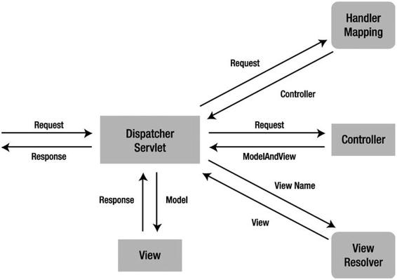

Spring @MVC
MVC is one of the most important modules of the Spring framework. It builds on the powerful Spring IoC container and makes extensive use of the container features to simplify its configuration.
Model-view-controller (MVC) is a common design pattern in UI design. It decouples business logic from UIs by separating the roles of model, view, and controller in an application. Models are responsible for encapsulating application data for views to present. Views should only present this data, without including any business logic. Controllers are responsible for receiving requests from users and invoking back-end services for business processing. After processing, back-end services may return some data for views to present. Controllers collect this data and prepare models for views to present. The core idea of the MVC pattern is to separate business logic from UIs to allow them to change independently without affecting each other.
In a Spring MVC application, models usually consist of domain objects that are processed by the service layer and persisted by the persistence layer. Views are usually JSP templates written with Java Standard Tag Library (JSTL). However, it’s also possible to define views as PDF files, Excel files, RESTful web services or even Flex interfaces the last of which are often dubbed a Rich Internet Application (RIA).
Upon finishing this chapter, you will be able to develop Java web applications using Spring MVC. You will also understand Spring MVC’s common controller and view types, including, what has become the de facto use of annotations for creating controllers as of Spring 3.0. Moreover, you will understand the basic principles of Spring MVC, which will serve as the foundations for more advanced topics covered in the upcoming chapters.
4-1. Developing a Simple Web Application with Spring MVC
Problem
You want to develop a simple web application with Spring MVC to learn the basic concepts and configurations of this framework.
Solution
The central component of Spring MVC is a controller. In the simplest Spring MVC application, a controller is the only servlet you need to configure in a Java web deployment descriptor (i.e., the web.xml file or a ServletContainerInitializer). A Spring MVC controller—often referred to as a Dispatcher Servlet—implements one of Sun’s core Java EE design patterns called front controller. It acts as the front controller of the Spring MVC framework, and every web request must go through it so that it can manage the entire request-handling process.
When a web request is sent to a Spring MVC application, a controller first receives the request. Then it organizes the different components configured in Spring’s web application context or annotations present in the controller itself, all needed to handle the request. Figure 4-1 shows the primary flow of request handling in Spring MVC.

Figure 4-1. Primary flow of request handling in Spring MVC
To define a controller class in Spring 4.0, a class has to be marked with the @Controller annotation. In contrast to other framework controllers or earlier Spring versions, an annotated controller class need not implement a framework-specific interface or extend a framework-specific base class.
For example, prior to Spring 3.0 one of a series of classes, such as AbstractController, were used to give a class the behavior of a Dispatcher Servlet. Starting from Spring 2.5, annotated classes for defining Dispatcher Servlets became available. As of Spring 3.0, these series of classes for giving a class the behavior of a Dispatcher Servlet have been deprecated in favor of annotated classes.
When a @Controller annotated class (i.e., a controller class) receives a request, it looks for an appropriate handler method to handle the request. This requires that a controller class map each request to a handler method by one or more handler mappings. In order to do so, a controller class’s methods are decorated with the @RequestMapping annotation, making them handler methods.
The signature for these handler methods—as you can expect from any standard class—is open ended. You can specify an arbitrary name for a handler method and define a variety of method arguments. Equally, a handler method can return any of a series of values (e.g., String or void), depending on the application logic it fulfills.
As the book progresses, you will encounter the various method arguments that can be used in handler methods using the @RequestMapping annotation. The following is only a partial list of valid argument types, just to give you an idea.
Once the controller class has picked an appropriate handler method, it invokes the handler method’s logic with the request. Usually, a controller’s logic invokes back-end services to handle the request. In addition, a handler method’s logic is likely to add or remove information from the numerous input arguments (e.g., HttpServletRequest, Map, Errors, or SessionStatus) that will form part of the ongoing Spring MVC flow.
After a handler method has finished processing the request, it delegates control to a view, which is represented as the handler method’s return value. To provide a flexible approach, a handler method’s return value doesn’t represent a view’s implementation (e.g., user.jsp or report.pdf) but rather a logical view (e.g., user or report)—note the lack of file extension.
A handler method’s return value can be either a String—representing a logical view name—or void, in which case a default logical view name is determined on the basis of a handler method’s or controller’s name.
In order to pass information from a controller to a view, it’s irrelevant that a handler’s method returns a logical view name—String or a void—since the handler method input arguments will be available to a view.
For example, if a handler method takes a Map and SessionStatus objects as input parameters—modifying their contents inside the handler method’s logic—these same objects will be accessible to the view returned by the handler method.
When the controller class receives a view, it resolves the logical view name into a specific view implementation (e.g., user.jsp or report.pdf) by means of a view resolver. A view resolver is a bean configured in the web application context that implements the ViewResolver interface. Its responsibility is to return a specific view implementation (HTML, JSP, PDF, or other) for a logical view name.
Once the controller class has resolved a view name into a view implementation, per the view implementation’s design, it renders the objects (e.g., HttpServletRequest, Map, Errors, or SessionStatus) passed by the controller’s handler method. The view’s responsibility is to display the objects added in the handler method’s logic to the user.
How It Works
Suppose you are going to develop a court reservation system for a sports center. The UIs of this application are web-based so that users can make online reservations through the Internet. You want to develop this application using Spring MVC. First of all, you create the following domain classes in the domain subpackage:
package com.apress.springrecipes.court.domain;
...
public class Reservation {
private String courtName;
private Date date;
private int hour;
private Player player;
private SportType sportType;
// Constructors, Getters and Setters
...
}
package com.apress.springrecipes.court.domain;
public class Player {
private String name;
private String phone;
// Constructors, Getters and Setters
...
}
package com.apress.springrecipes.court.domain;
public class SportType {
private int id;
private String name;
// Constructors, Getters and Setters
...
}
Then you define the following service interface in the service subpackage to provide reservation services to the presentation layer:
package com.apress.springrecipes.court.service;
...
public interface ReservationService {
public List<Reservation> query(String courtName);
}
In a production application, you should implement this interface with database persistence. But for simplicity’s sake, you can store the reservation records in a list and hard-code several reservations for testing purposes:
package com.apress.springrecipes.court.service;
...
public class ReservationServiceImpl implements ReservationService {
public static final SportType TENNIS = new SportType(1, "Tennis");
public static final SportType SOCCER = new SportType(2, "Soccer");
private List<Reservation> reservations;
public ReservationServiceImpl() {
reservations = new ArrayList<>();
reservations.add(new Reservation("Tennis #1",
new GregorianCalendar(2008, 0, 14).getTime(), 16,
new Player("Roger", "N/A"), TENNIS));
reservations.add(new Reservation("Tennis #2",
new GregorianCalendar(2008, 0, 14).getTime(), 20,
new Player("James", "N/A"), TENNIS));
}
public List<Reservation> query(String courtName) {
List<Reservation> result = new ArrayList<>();
for (Reservation reservation : reservations) {
if (reservation.getCourtName().equals(courtName)) {
result.add(reservation);
}
}
return result;
}
}
Setting up a Spring MVC Application
Next, you need to create a Spring MVC application layout. In general, a web application developed with Spring MVC is set up in the same way as a standard Java web application, except that you have to add a couple of configuration files and required libraries specific to Spring MVC.
The Java EE specification defines the valid directory structure of a Java web application made up of a Web Archive or WAR file. For example, you have to provide a web deployment descriptor (i.e., web.xml) in the WEB-INF root or 1 or more classes implementing ServletContainerInitializer. The class files and JAR files for this web application should be put in the WEB-INF/classes and WEB-INF/lib directories, respectively.
For your court reservation system, you create the following directory structure. Note that the highlighted files are Spring-specific configuration files.
 Note To develop a web application with Spring MVC, you have to add all the normal Spring dependencies (see Chapter 1 for more information) as well as the Spring Web and Spring MVC dependencies to your CLASSPATH. If you are using Maven, add the following dependencies to your Maven Project:
Note To develop a web application with Spring MVC, you have to add all the normal Spring dependencies (see Chapter 1 for more information) as well as the Spring Web and Spring MVC dependencies to your CLASSPATH. If you are using Maven, add the following dependencies to your Maven Project:
<dependency>
<groupId>org.springframework</groupId>
<artifactId>spring-webmvc</artifactId>
<version>${spring.version}</version>
</dependency>
<dependency>
<groupId>org.springframework</groupId>
<artifactId>spring-web</artifactId>
<version>${spring.version}</version>
</dependency>
court/
css/
images/
WEB-INF/
classes/
lib/*.jar
jsp/
welcome.jsp
reservationQuery.jsp
court-service.xml
court-servlet.xml
web.xml
The files outside the WEB-INF directory are directly accessible to users via URLs, so the CSS files and image files must be put there. When using Spring MVC, the JSP files act as templates. They are read by the framework for generating dynamic content, so the JSP files should be put inside the WEB-INF directory to prevent direct access to them. However, some application servers don’t allow the files inside WEB-INF to be read by a web application internally. In that case, you can only put them outside the WEB-INF directory.
Creating the Configuration Files
The web deployment descriptor web.xml is the essential configuration file for a Java web application. In this file, you define the servlets for your application and how web requests are mapped to them. For a Spring MVC application, you only have to define a single DispatcherServlet instance that acts as the front controller for Spring MVC, although you are allowed to define more than one if required.
In large applications, it can be convenient to use multiple DispatcherServlet instances. This allows DispatcherServlet instances to be designated to specific URLs, making code management easier and letting individual team members work on an application’s logic without getting in each other’s way.
<web-app version="3.0" xmlns="http://java.sun.com/xml/ns/j2ee"
xmlns:xsi="http://www.w3.org/2001/XMLSchema-instance"
xsi:schemaLocation="http://java.sun.com/xml/ns/j2ee
http://java.sun.com/xml/ns/j2ee/web-app_3_0.xsd">
<display-name>Court Reservation System</display-name>
<servlet>
<servlet-name>court</servlet-name>
<servlet-class>
org.springframework.web.servlet.DispatcherServlet
</servlet-class>
<load-on-startup>1</load-on-startup>
</servlet>
<servlet-mapping>
<servlet-name>court</servlet-name>
<url-pattern>/</url-pattern>
</servlet-mapping>
</web-app>
In this web deployment descriptor, you define a servlet of type DispatcherServlet. This is the core servlet class in Spring MVC that receives web requests and dispatches them to appropriate handlers. You set this servlet’s name to court and map all URLs using a / (slash), with the slash representing the root directory. Note that the URL pattern can be set to more granular patterns. In larger application’s it can make more sense to delegate patterns among various servlets, but for simplicity all URLs in the application are delegated to the single court servlet.
Another purpose of the servlet name is for DispatcherServlet to decide which file to load for Spring MVC configurations. By default, a look is made for a file by joining the servlet name with -servlet.xml as the file name. You can explicitly specify a configuration file in the contextConfigLocation servlet parameter. With the preceding setting, the court servlet loads the Spring MVC configuration file court-servlet.xml by default. This file should be a standard Spring bean configuration file, as shown in the following:
<beans xmlns="http://www.springframework.org/schema/beans"
xmlns:xsi="http://www.w3.org/2001/XMLSchema-instance"
xsi:schemaLocation="http://www.springframework.org/schema/beans
http://www.springframework.org/schema/beans/spring-beans.xsd">
...
</beans>
Later, you can configure Spring MVC with a series of Spring beans declared in this configuration file. You may also declare other application components such as data access objects and service objects in this file. However, it’s not a good practice to mix beans of different layers in a single configuration file. Instead, you should declare one bean configuration file per layer (e.g., court-persistence.xml for the persistence layer and court-service.xml for the service layer). For example, court-service.xml should include the following service object:
<beans xmlns="http://www.springframework.org/schema/beans"
xmlns:xsi="http://www.w3.org/2001/XMLSchema-instance"
xsi:schemaLocation="http://www.springframework.org/schema/beans
http://www.springframework.org/schema/beans/spring-beans.xsd">
<bean id="reservationService"
class="com.apress.springrecipes.court.service.ReservationServiceImpl" />
</beans>
In order for Spring to load your configuration files besides court-servlet.xml, you need to define the servlet listener ContextLoaderListener in web.xml. By default, it loads the bean configuration file /WEB-INF/applicationContext.xml, but you can specify your own in the context parameter contextConfigLocation. You can specify multiple configuration files by separating their locations with either commas or spaces.
<web-app ...>
<context-param>
<param-name>contextConfigLocation</param-name>
<param-value>/WEB-INF/court-service.xml</param-value>
</context-param>
<listener>
<listener-class>
org.springframework.web.context.ContextLoaderListener
</listener-class>
</listener>
...
</web-app>
Note that ContextLoaderListener loads the specified bean configuration files into the root application context, while each DispatcherServlet instance loads its configuration file into its own application context and refers to the root application context as its parent. So, the context loaded by each DispatcherServlet instance can access and even override beans declared in the root application context (but not vice versa). However, the contexts loaded by the DispatcherServlet instances cannot access each other.
Activating Spring MVC annotation scanning
Before you create an application’s controllers, you have to set up the web application for classes to be scanned for the presence of @Controller and @RequestMapping annotations. Only then can they operate as controllers. First, for Spring to auto-detect annotations, you have to enable Spring’s component scanning feature through the <context:component-scan> element.
In addition to this statement, since Spring MVC’s @RequestMapping annotation maps URL requests to controller classes and their corresponding handler methods, this requires additional statements in a web application’s context. To make this work, you have to register a RequestMappingHandlerMapping instance and an RequestMappingHandlerAdapter instance in the web application context. These instances process the @RequestMapping annotations at the class level and the method level, respectively.
To enable support for annotation-based controllers, include the following configuration in the court-servlet.xml file:
<beans xmlns="http://www.springframework.org/schema/beans"
xmlns:xsi="http://www.w3.org/2001/XMLSchema-instance"
xmlns:context="http://www.springframework.org/schema/context"
xsi:schemaLocation="http://www.springframework.org/schema/beans
http://www.springframework.org/schema/beans/spring-beans.xsd
http://www.springframework.org/schema/context
http://www.springframework.org/schema/context/spring-context.xsd">
<context:component-scan
base-package="com.apress.springrecipes.court.web" />
<bean class="org.springframework.web.servlet.mvc.method.annotation. RequestMappingHandlerMapping" />
<bean class="org.springframework.web.servlet.mvc.method.annotation. RequestMappingHandlerAdapter" />
</beans>
Notice the element <context:component-scan> with a base-package value of com.apress.springrecipes.court.web. This package corresponds to the same one used in the Spring MVC controller, which is illustrated next.
Next, the RequestMappingHandlerMapping and RequestMappingHandlerAdapter bean classes are preregistered in the web application context by default.
Once you have the basic context configuration file for scanning Spring MVC annotations, you can proceed to creating the controller class itself, as well as finishing the configuration set-up for court-servlet.xml.
Creating Spring MVC Controllers
An annotation-based controller class can be an arbitrary class that doesn’t implement a particular interface or extend a particular base class. You can annotate it with the @Controller annotation. There can be one or more handler methods defined in a controller to handle single or multiple actions. The signature of the handler methods is flexible enough to accept a range of arguments.
The @RequestMapping annotation can be applied to the class level or the method level. The first mapping strategy is to map a particular URL pattern to a controller class, and then a particular HTTP method to each handler method:
package com.apress.springrecipes.court.web;
...
import org.springframework.stereotype.Controller;
import org.springframework.web.bind.annotation.RequestMapping;
import org.springframework.web.bind.annotation.RequestMethod;
import org.springframework.web.servlet.ModelAndView;
import org.springframework.ui.Model;
@Controller
@RequestMapping("/welcome")
public class WelcomeController {
@RequestMapping(method = RequestMethod.GET)
public String welcome(Model model) {
Date today = new Date();
model.addAttribute("today", today);
return "welcome";
}
}
This controller creates a java.util.Date object to retrieve the current date, and then adds it to the input Model object as an attribute so the target view can display it.
Since you’ve already activated annotation scanning on the com.apress.springrecipes.court.web package declared inside the court-servlet.xml file, the annotations for the controller class are detected upon deployment.
The @Controller annotation defines the class as a Spring MVC controller. The @RequestMapping annotation is more interesting since it contains properties and can be declared at the class or handler method level. The first value used in this class— ("/welcome")—is used to specify the URL on which the controller is actionable, meaning any request received on the /welcome URL is attended by the WelcomeController class.
Once a request is attended by the controller class, it delegates the call to the default HTTP GET handler method declared in the controller. The reason for this behavior is that every initial request made on a URL is of the HTTP GET kind. So when the controller attends a request on the /welcome URL it subsequently delegates to the default HTTP GET handler method for processing.
The annotation @RequestMapping(method = RequestMethod.GET) is used to decorate the welcome method as the controller’s default HTTP GET handler method. It’s worth mentioning that if no default HTTP GET handler method is declared, a ServletException is thrown. Hence the importance of a Spring MVC controller having at a minimum a URL route and default HTTP GET handler method.
Another variation to this approach can be declaring both values—URL route and default HTTP GET handler method—in the @RequestMapping annotation used at the method level. This declaration is illustrated next:
@Controller
public class WelcomeController {
@RequestMapping(value = "/welcome", method=RequestMethod.GET)
public String welcome(Model model) {
...
This last declaration is equivalent to the earlier one. The value attribute indicates the URL to which the handler method is mapped and the method attribute defines the handler method as the controller’s default HTTP GET method.
This last controller illustrates the basic principles of Spring MVC. However, a typical controller may invoke back-end services for business processing. For example, you can create a controller for querying reservations of a particular court as follows:
package com.apress.springrecipes.court.web;
...
import com.apress.springrecipes.court.domain.Reservation;
import com.apress.springrecipes.court.service.ReservationService;
import org.springframework.beans.factory.annotation.Autowired;
import org.springframework.stereotype.Controller;
import org.springframework.web.bind.annotation.RequestMapping;
import org.springframework.web.bind.annotation.RequestMethod;
import org.springframework.web.bind.annotation.RequestParam;
import org.springframework.ui.Model;
@Controller
@RequestMapping("/reservationQuery")
public class ReservationQueryController {
private ReservationService reservationService;
@Autowired
public void ReservationQueryController(ReservationService reservationService) {
this.reservationService = reservationService;
}
@RequestMapping(method = RequestMethod.GET)
public void setupForm() {
}
@RequestMapping(method = RequestMethod.POST)
public String sumbitForm(@RequestParam("courtName") String courtName,Model model) {
List<Reservation> reservations = java.util.Collections.emptyList();
if (courtName != null) {
reservations = reservationService.query(courtName);
}
model.addAttribute("reservations", reservations);
return "reservationQuery";
}
}
This controller equally relies on the @Controller annotation to indicate the class in question is a Spring MVC controller. A new addition though is the @Autowired annotation assigned to the class’s constructor. This allows a class’s constructor to instantiate its fields from declarations made in the application’s configuration files (i.e., court-service.xml). So for example, in this last controller an attempt is made to locate a bean named reservationService to instantiate the field by the same name.
If you recall from earlier, the court-service.xml file was used to define a service bean by this same name. This allows the service bean to be injected into the controller class and assigned to the field implicitly. Without the @Autowired annotation, the service bean can be injected explicitly inside the court-servlet.xml configuration using a statement like the following:
<bean
class="com.apress.springrecipes.court.web.ReservationQueryController">
<property name="reservationService" ref="reservationService" />
</bean>
Thus the @Autowired annotation saves you time by not having to inject properties using XML. Continuing with the controller class statements, you can find the @RequestMapping("/reservationQuery") statement used to indicate that any request on the /reservationQuery URL be attended by the controller.
As outlined earlier, the controller then looks for a default HTTP GET handler method. Since the public void setupForm() method is assigned the necessary @RequestMapping annotation for this purpose, it’s called next.
Unlike the previous default HTTP GET handler method, notice that this method has no input parameters, no logic, and has a void return value. This means two things. By having no input parameters and no logic, a view only displays data hard-coded in the implementation template (e.g., JSP), since no data is being added by the controller. By having a void return value, a default view name based on the request URL is used, therefore since the requesting URL is /reservationQuery a return view named reservationQuery is assumed.
The remaining handler method is decorated with the @RequestMapping(method = RequestMethod.POST) annotation. At first sight, having two handler methods with only the class level /reservationQuery URL statement can be confusing, but it’s really simple. One method is invoked when HTTP GET requests are made on the /reservationQuery URL, the other when HTTP POST requests are made on the same URL.
The majority of requests in web applications are of the HTTP GET kind, where as requests of the HTTP POST kind are generally made when a user submits an HTML form. So revealing more of the application’s view (which we will describe shortly), one method is called when the HTML form is initially loaded (i.e., HTTP GET), where as the other is called when the HTML form is submitted (i.e., HTTP POST).
Looking closer at the HTTP POST default handler method, notice the two input parameters. First the @RequestParam("courtName") String courtName declaration, used to extract a request parameter named courtName. In this case, the HTTP POST request comes in the form /reservationQuery?courtName=<value>, this declaration makes said value available in the method under the variable named courtName. And second the Model declaration, used to define an object in which to pass data onto the returning view.
The logic executed by the handler method consists of using the controller’s reservationService to perform a query using the courtName variable. The results obtained from this query are assigned to the Model object, that will later become available to the returning view for display.
Finally, note that the method returns a view named reservationQuery. This method could have also returned void, just like the default HTTP GET, and have been assigned to the same reservationQuery default view on account of the requesting URL. Both approaches are identical.
Now that you are aware of how Spring MVC controllers are constituted, it’s time to explore the views to which a controller’s handler methods delegate their results.
Spring MVC supports many types of views for different presentation technologies. These include: JSPs, HTML, PDF, Excel worksheets (XLS), XML, JSON, Atom and RSS feeds, JasperReports, and other third-party view implementations.
In a Spring MVC application, views are most commonly JSP templates written with JSTL. When the DispatcherServlet—defined in an application’s web.xml file—receives a view name returned from a handler, it resolves the logical view name into a view implementation for rendering. For example, you can configure the InternalResourceViewResolver bean, in this case inside court-servlet.xml, of a web application’s context to resolve view names into JSP files in the /WEB-INF/jsp/ directory:
<bean class="org.springframework.web.servlet.view.InternalResourceViewResolver">
<property name="prefix" value="/WEB-INF/jsp/" />
<property name="suffix" value=".jsp" />
</bean>
By using this last configuration, a logical view named reservationQuery is delegated to a view implementation located at /WEB-INF/jsp/reservationQuery.jsp . Knowing this you can create the following JSP template for the welcome controller, naming it welcome.jsp and putting it in the /WEB-INF/jsp/ directory:
<%@ taglib prefix="fmt" uri="http://java.sun.com/jsp/jstl/fmt" %>
<html>
<head>
<title>Welcome</title>
</head>
<body>
Welcome to Court Reservation System</h2>
Today is <fmt:formatDate value="${today}" pattern="yyyy-MM-dd" />.
</body>
</html>
In this JSP template, you make use of the fmt tag library in JSTL to format the today model attribute into the pattern yyyy-MM-dd. Don’t forget to include the fmt tag library definition at the top of this JSP template.
Next, you can create another JSP template for the reservation query controller and name it reservationQuery.jsp to match the view name:
<%@ taglib prefix="c" uri="http://java.sun.com/jsp/jstl/core" %>
<%@ taglib prefix="fmt" uri="http://java.sun.com/jsp/jstl/fmt" %>
<html>
<head>
<title>Reservation Query</title>
</head>
<body>
<form method="post">
Court Name
<input type="text" name="courtName" value="${courtName}" />
<input type="submit" value="Query" />
</form>
<table border="1">
<tr>
<th>Court Name</th>
<th>Date</th>
<th>Hour</th>
<th>Player</th>
</tr>
<c:forEach items="${reservations}" var="reservation">
<tr>
<td>${reservation.courtName}</td>
<td><fmt:formatDate value="${reservation.date}" pattern="yyyy-MM-dd" /></td>
<td>${reservation.hour}</td>
<td>${reservation.player.name}</td>
</tr>
</c:forEach>
</table>
</body>
</html>
In this JSP template, you include a form for users to input the court name they want to query, and then use the <c:forEach> tag to loop the reservations model attribute to generate the result table.
Deploying the Web Application
In a web application’s development process, we strongly recommend installing a local Java EE application server that comes with a web container for testing and debugging purposes. For the sake of easy configuration and deployment, we have chosen Apache Tomcat 7.0.x as the web container.
The deployment directory for this web container is located under the webapps directory. By default, Tomcat listens on port 8080 and deploys applications onto a context by the same name of an application WAR. Therefore, if you package the application in a WAR named court.war, the welcome controller and the reservation query controller can be accessed through the following URLs:
http://localhost:8080/court/welcome
http://localhost:8080/court/reservationQuery
The current configuration is a classic configuration, it is all XML based and isn’t using namespaces. Namespaces can help you minimize the amount of XML you need to write. To minimize the XML we can leverage the mvc namespace, we could use <mvc:annotation-driven />instead of declaring the RequestMappingHandlerMapping and RequestMappingHandlerAdapter explicitly. The configuration would then look like the following:
<beans xmlns="http://www.springframework.org/schema/beans"
xmlns:xsi="http://www.w3.org/2001/XMLSchema-instance"
xmlns:context="http://www.springframework.org/schema/context"
xmlns:mvc="http://www.springframework.org/schema/mvc"
xsi:schemaLocation="
http://www.springframework.org/schema/beans http://www.springframework.org/schema/beans/spring-beans.xsd
http://www.springframework.org/schema/context http://www.springframework.org/schema/context/spring-context.xsd
http://www.springframework.org/schema/mvc http://www.springframework.org/schema/mvc/spring-mvc.xsd">
<!-- Scanning enablement on package -->
<context:component-scan base-package="com.apress.springrecipes.court.web" />
<!-- Annotation handlers (Applied by default to ALL @controllers -->
<mvc:annotation-driven />
<!-- Views mapped in JSPs under /WEB-INF/jsp -->
<bean class="org.springframework.web.servlet.view.InternalResourceViewResolver">
<property name="prefix" value="/WEB-INF/jsp/" />
<property name="suffix" value=".jsp" />
</bean>
</beans>
The <mvc:annotation-driven> tag registers, among other things, the RequestMappingHandlerMapping and RequestMappingHandlerAdapter.
As of Spring 3.1 it is also possible to use a Java based configuration approach which we can leverage to eliminate the XML (we will only be left with the <context:component-scan />for now). The Java based configuration looks like this
package com.apress.springrecipes.court.web.config;
// ... Imports omitted
@Configuration
@EnableWebMvc
public class WebConfiguration {
@Bean
public ViewResolver internalResourceViewResolver() {
InternalResourceViewResolver viewResolver = new InternalResourceViewResolver();
viewResolver.setPrefix("/WEB-INF/jsp/");
viewResolver.setSuffix(".jsp");
return viewResolver;
}
}
The important thing to notice here is the @EnableWebMvc annotation, which takes care of registering the RequestMappingHandlerMapping and RequestMappingHandlerAdapter as does the <mvc:annotation-driven />tag. We also added the @Configuration annotation so that Spring knows that this class needs to be used to configure out application. Our XML is now reduced to only a <context:component-scan />which will pickup our @Configuration annotated class. We could do the same for our service configuration and move that to Java configuration.
package com.apress.springrecipes.court.service.config;
import com.apress.springrecipes.court.service.ReservationService;
import com.apress.springrecipes.court.service.ReservationServiceImpl;
import org.springframework.context.annotation.Bean;
import org.springframework.context.annotation.Configuration;
@Configuration
public class ServiceConfiguration {
@Bean
public ReservationService reservationService() {
return new ReservationServiceImpl();
}
}
Now we would need to modify our court-service.xml to do component scanning of the service sub package to detect this configuration class.
<beans xmlns="http://www.springframework.org/schema/beans"
xmlns:xsi="http://www.w3.org/2001/XMLSchema-instance"
xmlns:context="http://www.springframework.org/schema/context"
xsi:schemaLocation="http://www.springframework.org/schema/beans http://www.springframework.org/schema/beans/spring-beans.xsd
http://www.springframework.org/schema/context http://www.springframework.org/schema/context/spring-context.xsd">
<!-- Scanning enablement on package -->
<context:component-scan base-package="com.apress.springrecipes.court.service"/>
</beans>
If we rebuild and redeploy our application it should still work.
As of the release of the Servlet 3.0 specification it isn’t necessary to have a web.xml file anymore, it became optional. As hinted earlier we can use an implementation of a ServletContainerInitializer (or multiple) to configure our application.
Instead of implementing our own we are going to leverage the convenient Spring implementation the SpringServletContainerInitializer. This class is an implementation of the ServletContainerInitializer interface and scans the classpath for implementations of a WebApplicationInitializer interface. Luckily Spring provides some convenience implementations of this interface which we can leverage for our application we are going to use the AbstractAnnotationConfigDispatcherServletInitializer to reduce our Spring XML to zero.
Create a class which extends AbstractAnnotationConfigDispatcherServletInitializer and implements the necessary methods.
package com.apress.springrecipes.court.web;
import com.apress.springrecipes.court.service.config.ServiceConfiguration;
import com.apress.springrecipes.court.web.config.WebConfiguration;
import org.springframework.web.servlet.support.AbstractAnnotationConfigDispatcherServletInitializer;
public class CourtApplicationInitializer extends AbstractAnnotationConfigDispatcherServletInitializer {
@Override
protected Class<?>[] getRootConfigClasses() {
return new Class<?>[] {ServiceConfiguration.class};
}
@Override
protected Class<?>[] getServletConfigClasses() {
return new Class<?>[] {WebConfiguration.class};
}
@Override
protected String[] getServletMappings() {
return new String[] {"/", "/welcome"};
}
}
We need to configure the root-context and the servlet-context, respectively the ContextLoaderListener and DispatcherServlet. We do this by implementing the getRootConfigClasses and getServletConfigClasses methods. The first is for the ContextLoaderListener and this we pass the ServiceConfiguration class we created earlier. The second is for the DispatcherServlet and that we pass the WebConfiguration class (which requires a minor addition). Finally we need to map the servlet to 1 or more URLs for this we implement the getServletMappings method.
@Configuration
@EnableWebMvc
@ComponentScan("com.apress.springrecipes.court.web")
public class WebConfiguration { ... }
As we want to eliminate XML as much as possible we also need to move the component-scanning to Java configuration. For this we use the @ComponentScan tag, which replaces the <context:component-scan />tag.
With the configuration above we can remove the court-service.xml and court-servlet.xml however we, sadly, still need the web.xml. This is due to some omissions in the Servlet 3.0 spec, not everything that can be configured in the web.xml has a Java based alternative yet. For instance the welcome pages can only be specified in XML not in Java, the same goes for the display-name and error-pages (which we will see later). However the following is what is left of the web.xml and all the XML we have left in our application.
<web-app xmlns="http://java.sun.com/xml/ns/javaee"
xmlns:xsi="http://www.w3.org/2001/XMLSchema-instance"
xsi:schemaLocation="http://java.sun.com/xml/ns/javaee
http://java.sun.com/xml/ns/javaee/web-app_3_0.xsd"
version="3.0">
<display-name>Court Reservation System</display-name>
<welcome-file-list>
<welcome-file>welcome</welcome-file>
</welcome-file-list>
</web-app>
Note From this point on the recipes will use Java-based configuration, however if you prefer an XML-based approach we also included the XML equivalent of the configuration. See the court-servlet.xml file in the project.
4-2. Mapping requests with @RequestMapping
Problem
When DispatcherServlet receives a web request, it attempts to dispatch requests to the various controllers classes that have been declared with the @Controller annotation. The dispatching process depends on the various @RequestMapping annotations declared in a controller class and its handler methods. You want to define a strategy for mapping requests using the @RequestMapping annotation.
Solution
In a Spring MVC application, web requests are mapped to handlers by one or more @RequestMapping annotations declared in controller classes.
Handler mappings match URLs according to their paths relative to the context path (i.e., the web application context’s deployed path) and the servlet path (i.e., the path mapped to DispatcherServlet). So for example, in the URL http://localhost:8080/court/welcome the path to match is /welcome, as the context path is /court and there’s no servlet path—recall the servlet path declared as / in web.xml.
How It Works
Mapping requests by method
The simplest strategy for using @RequestMapping annotations is to decorate the handler methods directly. For this strategy to work, you have to declare each handler method with the @RequestMapping annotation containing a URL pattern. If a handler’s @RequestMapping annotation matches a request’s URL, DispatcherServlet it dispatches the request to this handler for it to handle the request.
@Controller
public class MemberController {
private MemberService memberService;
@Autowired
public MemberController(MemberService memberService) {
this.memberService = memberService;
}
@RequestMapping("/member/add")
public String addMember(Model model) {
model.addAttribute("member", new Member());
model.addAttribute("guests", memberService.list());
return "memberList";
}
@RequestMapping(value={"/member/remove","/member/delete"}, method=RequestMethod.GET)
public String removeMember(
@RequestParam("memberName") String memberName) {
memberService.remove(memberName);
return "redirect:";
}
}
This last listing illustrates how each handler method is mapped to a particular URL using the @RequestMapping annotation. The second handler method illustrates the assignment of multiple URLs, so both /member/remove and /member/delete trigger the execution of the handler method. By default, it’s assumed all incoming requests to URLs are of the HTTP GET kind.
Mapping requests by class
The @RequestMapping annotation can also be used to decorate a controller class. This allows handler methods to either forgo the use of @RequestMapping annotations, as illustrated in the ReservationQueryController controller in recipe 4-1, or use finer grained URLs with their own @RequestMapping annotation. For broader URL matching, the @RequestMapping annotation also supports the use wildcards (i.e., *) .
The following listing illustrates the use of URL wildcards in a @RequestMapping annotation, as well as finer grained URL matching on @RequestMapping annotations for handler methods.
@Controller
@RequestMapping("/member/*")
public class MemberController {
private MemberService memberService;
@Autowired
public MemberController(MemberService memberService) {
this.memberService = memberService;
}
@RequestMapping("add")
public String addMember(Model model) {
model.addAttribute("member", new Member());
model.addAttribute("guests", memberService.list());
return "memberList";
}
@RequestMapping(value={"remove","delete"}, method=RequestMethod.GET)
public String removeMember(
@RequestParam("memberName") String memberName) {
memberService.remove(memberName);
return "redirect:";
}
@RequestMapping("display/{user}")
public String removeMember(
@RequestParam("memberName") String memberName,
@PathVariable("user") String user) {
.....
}
@RequestMapping
public void memberList() {
.....
}
public void memberLogic(String memberName) {
.....
}
}
Note the class level @RequestMapping annotation uses a URL wildcard: /member/* . This in turn delegates all requests under the /member/ URL to the controller’s handler methods.
The first two handler methods make use of the @RequestMapping annotation. The addMember() method is invoked when an HTTP GET request is made on the /member/add URL. Whereas the removeMember() method is invoked when an HTTP GET request is made on either the /member/remove or /member/delete URL.
The third handler method uses the special notation {path_variable} to specify its @RequestMapping value. By doing so, a value present in the URL can be passed as input to the handler method. Notice the handler method declares @PathVariable("user") String user. In this manner, if a request is received in the form member/display/jdoe , the handler method has access to the user variable with a jdoe value. This is mainly a facility that allows you to avoid tinkering with a handler’s request object and an approach that is especially helpful when you design RESTful web services.
The fourth handler method also uses the @RequestMapping annotation, but in this case lacks a URL value. Since the class level uses the /member/* URL wildcard, this handler method is executed as a catch-all. So any URL request (e.g., /member/abcdefg or /member/randomroute) triggers this method. Note the void return value, that in turn makes the handler method default to a view by its name (i.e., memberList).
The last method—memberLogic—lacks any @RequestMapping annotations, this means the method is a utility for the class and has no influence on Spring MVC.
Mapping requests by HTTP request type
By default, @RequestMapping annotations handle all types of incoming requests. It is however, in most cases, not wanted that the same method is executed for both a GET and POST request. To differentiate on HTTP request, it’s necessary to specify the type explicitly in the @RequestMapping annotation as follows:
@RequestMapping(value= "processUser", method = RequestMethod.POST)
public String submitForm(@ModelAttribute("member") Member member,
BindingResult result, Model model) {
.....
}
The extent to which you require specifying a handler method’s HTTP type depends on how and what is interacting with a controller. For the most part, web browsers perform the bulk of their operations using HTTP GET and HTTP POST requests. However, other devices or applications (e.g., RESTful web services) may require support for other HTTP request types.
In all, there are eight different HTTP request types: HEAD, GET, POST, PUT, DELETE, TRACE, OPTIONS and CONNECT. However, support for handling all these request types goes beyond the scope of an MVC controller, since a web server, as well as the requesting party need to support such HTTP request types. Considering the majority of HTTP requests are of the GET or POST kind, you will rarely if ever require implementing support for these additional HTTP request types.
WHERE ARE THE URL EXTENSIONS LIKE .HTML AND .JSP ?
You might have noticed that in all the URLs specified in @RequestMapping annotations, there was no trace of a file extension like .html or .jsp. This is good practice in accordance with MVC design, even though it’s not widely adopted.
A controller should not be tied to any type of extension that is indicative of a view technology, like HTML or JSP. This is why controllers return logical views and also why matching URLs should be declared without extensions.
In an age where it’s common to have applications serve the same content in different formats, such as XML, JSON, PDF, or XLS (Excel). It should be left to a view resolver to inspect the extension provided in a request—if any—and determine which view technology to use.
In this short introduction, you’ve seen how a resolver is configured in an MVC’s configuration file (*-servlet.xml ) to map logical views to JSP files, all without every using a URL file extension like .jsp.
In later recipes, you will learn how Spring MVC uses this same non-extension URL approach to serve content using different view technologies.
4-3. Intercepting Requests with Handler Interceptors
Problem
Servlet filters defined by the Servlet API can pre-handle and post-handle every web request before and after it’s handled by a servlet. You want to configure something with similar functions as filters in Spring’s web application context to take advantage of the container features.
Moreover, sometimes you may want to pre-handle and post-handle web requests that are handled by Spring MVC handlers, and manipulate the model attributes returned by these handlers before they are passed to the views.
Solution
Spring MVC allows you to intercept web requests for pre-handling and post-handling through handler interceptors. Handler interceptors are configured in Spring’s web application context, so they can make use of any container features and refer to any beans declared in the container. A handler interceptor can be registered for particular URL mappings, so it only intercepts requests mapped to certain URLs.
Each handler interceptor must implement the HandlerInterceptor interface, which contains three callback methods for you to implement: preHandle(), postHandle(), and afterCompletion(). The first and second methods are called before and after a request is handled by a handler. The second method also allows you to get access to the returned ModelAndView object, so you can manipulate the model attributes in it. The last method is called after the completion of all request processing (i.e., after the view has been rendered).
How It Works
Suppose you are going to measure each web request’s handling time by each request handler and allow the views to show this time to the user. You can create a custom handler interceptor for this purpose:
package com.apress.springrecipes.court.web;
...
import org.springframework.web.servlet.HandlerInterceptor;
import org.springframework.web.servlet.ModelAndView;
public class MeasurementInterceptor implements HandlerInterceptor {
public boolean preHandle(HttpServletRequest request,
HttpServletResponse response, Object handler) throws Exception {
long startTime = System.currentTimeMillis();
request.setAttribute("startTime", startTime);
return true;
}
public void postHandle(HttpServletRequest request,
HttpServletResponse response, Object handler,
ModelAndView modelAndView) throws Exception {
long startTime = (Long) request.getAttribute("startTime");
request.removeAttribute("startTime");
long endTime = System.currentTimeMillis();
modelAndView.addObject("handlingTime", endTime - startTime);
}
public void afterCompletion(HttpServletRequest request,
HttpServletResponse response, Object handler, Exception ex)
throws Exception {
}
}
In the preHandle() method of this interceptor, you record the start time and save it to a request attribute. This method should return true, allowing DispatcherServlet to proceed with request handling. Otherwise, DispatcherServlet assumes that this method has already handled the request, so DispatcherServlet returns the response to the user directly. Then, in the postHandle() method, you load the start time from the request attribute and compare it with the current time. You can calculate the total duration and then add this time to the model for passing to the view. Finally, as there is nothing for the afterCompletion() method to do, you can leave its body empty.
When implementing an interface, you must implement all the methods even though you may not have a need for all of them. A better way is to extend the interceptor adapter class instead. This class implements all the interceptor methods by default. You can override only the methods that you need.
package com.apress.springrecipes.court.web;
...
import org.springframework.web.servlet.ModelAndView;
import org.springframework.web.servlet.handler.HandlerInterceptorAdapter;
public class MeasurementInterceptor extends HandlerInterceptorAdapter {
public boolean preHandle(HttpServletRequest request,
HttpServletResponse response, Object handler) throws Exception {
...
}
public void postHandle(HttpServletRequest request,
HttpServletResponse response, Object handler,
ModelAndView modelAndView) throws Exception {
...
}
}
To register an interceptor you need to modify the WebConfiguration which was created in the first recipe. You need to have it extend WebMvcConfigurerAdapter and override the addInterceptors method. The method gives you access to the InterceptorRegistry which you can use the add interceptors. The modified class looks like the following.
@Configuration
@EnableWebMvc
@ComponentScan("com.apress.springrecipes.court.web")
public class WebConfiguration extends WebMvcConfigurerAdapter {
@Override
public void addInterceptors(InterceptorRegistry registry) {
registry.addInterceptor(measurementInterceptor());
}
@Bean
public MeasurementInterceptor measurementInterceptor() {
return new MeasurementInterceptor();
}
...
}
Now you can show this time in welcome.jsp to verify this interceptor’s functionality. As WelcomeController doesn’t have much to do, you may likely see that the handling time is 0 milliseconds. If this is the case, you may add a sleep statement to this class to see a longer handling time.
<%@ taglib prefix="fmt" uri="http://java.sun.com/jsp/jstl/fmt" %>
<html>
<head>
<title>Welcome</title>
</head>
<body>
...
<hr />Handling time : ${handlingTime} ms
</body>
</html>
By default HandlerInterceptors apply to all @Controllers however sometimes you want to discriminate on which controllers interceptors are applied. The namespace as well as the Java-based configuration allow for interceptors to be mapped to particular URLs. It is only a matter of configuration. Below is the Java configuration of this.
package com.apress.springrecipes.court.web.config;
// Other imports omitted for brevity
import com.apress.springrecipes.court.web.ExtensionInterceptor;
import org.springframework.web.servlet.config.annotation.InterceptorRegistry;
@Configuration
@EnableWebMvc
@ComponentScan("com.apress.springrecipes.court.web")
public class WebConfiguration extends WebMvcConfigurerAdapter {
@Override
public void addInterceptors(InterceptorRegistry registry) {
registry.addInterceptor(measurementInterceptor());
registry.addInterceptor(summaryReportInterceptor()).addPathPatterns("/reservationSummary*");
}
@Bean
public MeasurementInterceptor measurementInterceptor() {
return new MeasurementInterceptor();
}
@Bean
public ExtensionInterceptor summaryReportInterceptor() { return new ExtensionInterceptor();}
@Bean
public ViewResolver internalResourceViewResolver() {
InternalResourceViewResolver viewResolver = new InternalResourceViewResolver();
viewResolver.setPrefix("/WEB-INF/jsp/");
viewResolver.setSuffix(".jsp");
return viewResolver;
}
}
First there is the addition of the interceptor bean summaryReportInterceptor. The structure of the backing class for this bean is identical to that of the measurementInterceptor. (i.e., it implements the HandlerInterceptor interface). However, this interceptor performs logic that should be restricted to a particular controller which is mapped to the /reservationSummary URI.
When registering an interceptor we can specify which URLs it maps to, by default this takes a ANT-style expression. We pass this pattern into the addPathPatterns method, there is also an excludePathPatterns method which you can use to exclude the interceptor for certain URLs.
Problem
In order for your web application to support internationalization, you have to identify each user’s preferred locale and display contents according to this locale.
Solution
In a Spring MVC application, a user’s locale is identified by a locale resolver, which has to implement the LocaleResolver interface. Spring MVC comes with several LocaleResolver implementations for you to resolve locales by different criteria. Alternatively, you may create your own custom locale resolver by implementing this interface.
You can define a locale resolver by registering a bean of type LocaleResolver in the web application context. You must set the bean name of the locale resolver to localeResolver for DispatcherServlet to auto-detect. Note that you can register only one locale resolver per DispatcherServlet.
How It Works
Resolving Locales by an HTTP Request Header
The default locale resolver used by Spring is AcceptHeaderLocaleResolver. It resolves locales by inspecting the accept-language header of an HTTP request. This header is set by a user’s web browser according to the locale setting of the underlying operating system. Note that this locale resolver cannot change a user’s locale because it is unable to modify the locale setting of the user’s operating system.
Resolving Locales by a Session Attribute
Another option of resolving locales is by SessionLocaleResolver. It resolves locales by inspecting a predefined attribute in a user’s session. If the session attribute doesn’t exist, this locale resolver determines the default locale from the accept-language HTTP header.
@Bean
public LocaleResolver localeResolver () {
SessionLocaleResolver localeResolver = new SessionLocaleResolver();
localeResolver.setDefaultLocale(new Locale("en"));
return localeResolver;
}
You can set the defaultLocale property for this resolver in case the session attribute doesn’t exist. Note that this locale resolver is able to change a user’s locale by altering the session attribute that stores the locale.
Resolving Locales by a Cookie
You can also use CookieLocaleResolver to resolve locales by inspecting a cookie in a user’s browser. If the cookie doesn’t exist, this locale resolver determines the default locale from the accept-language HTTP header.
@Bean
public LocaleResolver localeResolver() {
return new CookieLocaleResolver();
}
The cookie used by this locale resolver can be customized by setting the cookieName and cookieMaxAge properties. The cookieMaxAge property indicates how many seconds this cookie should be persisted. The value -1 indicates that this cookie will be invalid after the browser is closed.
@Bean
public LocaleResolver localeResolver() {
CookieLocaleResolver cookieLocaleResolver = new CookieLocaleResolver();
cookieLocaleResolver.setCookieName("language");
cookieLocaleResolver.setCookieMaxAge(3600);
cookieLocaleResolver.setDefaultLocale(new Locale("en"));
return cookieLocaleResolver;
}
You can also set the defaultLocale property for this resolver in case the cookie doesn’t exist in a user’s browser. This locale resolver is able to change a user’s locale by altering the cookie that stores the locale.
Changing a User’s Locale
In addition to changing a user’s locale by calling LocaleResolver.setLocale() explicitly, you can also apply LocaleChangeInterceptor to your handler mappings. This interceptor detects if a special parameter is present in the current HTTP request. The parameter name can be customized with the paramName property of this interceptor. If such a parameter is present in the current request, this interceptor changes the user’s locale according to the parameter value.
package com.apress.springrecipes.court.web.config;
import org.springframework.web.servlet.LocaleResolver;
import org.springframework.web.servlet.i18n.CookieLocaleResolver;
import org.springframework.web.servlet.i18n.LocaleChangeInterceptor;
import org.springframework.web.servlet.view.InternalResourceViewResolver;
import java.util.Locale;
// Other imports omitted
@Configuration
@EnableWebMvc
@ComponentScan("com.apress.springrecipes.court.web")
public class WebConfiguration extends WebMvcConfigurerAdapter {
@Override
public void addInterceptors(InterceptorRegistry registry) {
registry.addInterceptor(measurementInterceptor());
registry.addInterceptor(localeChangeInterceptor());
registry.addInterceptor(summaryReportInterceptor()).addPathPatterns("/reservationSummary*");
}
@Bean
public LocaleChangeInterceptor localeChangeInterceptor() {
LocaleChangeInterceptor localeChangeInterceptor = new LocaleChangeInterceptor();
localeChangeInterceptor.setParamName("language");
return localeChangeInterceptor;
}
@Bean
public LocaleResolver localeResolver() {
CookieLocaleResolver cookieLocaleResolver = new CookieLocaleResolver();
cookieLocaleResolver.setCookieName("language");
cookieLocaleResolver.setCookieMaxAge(3600);
cookieLocaleResolver.setDefaultLocale(new Locale("en"));
return cookieLocaleResolver;
}
...
}
Now a user’s locale can be changed by any URLs with the language parameter. For example, the following two URLs change the user’s locale to English for the United States, and to German, respectively:
http://localhost:8080/court/welcome?language=en_US
http://localhost:8080/court/welcome?language=de
Then you can show the HTTP response object’s locale in welcome.jsp to verify the locale interceptor’s configuration:
<%@ taglib prefix="fmt" uri="http://java.sun.com/jsp/jstl/fmt" %>
<html>
<head>
<title>Welcome</title>
</head>
<body>
...
<br />Locale : ${pageContext.response.locale}
</body>
</html>
4-5. Externalizing Locale-Sensitive Text Messages
Problem
When developing an internationalized web application, you have to display your web pages in a user’s preferred locale. You don’t want to create different versions of the same page for different locales.
Solution
To avoid creating different versions of a page for different locales, you should make your web page independent of the locale by externalizing locale-sensitive text messages. Spring is able to resolve text messages for you by using a message source, which has to implement the MessageSource interface. Then your JSP files can use the <spring:message> tag, defined in Spring’s tag library, to resolve a message given the code.
How It Works
You can define a message source by registering a bean of type MessageSource in the web application context. You must set the bean name of the message source to messageSource for DispatcherServlet to auto-detect. Note that you can register only one message source per DispatcherServlet.
The ResourceBundleMessageSource implementation resolves messages from different resource bundles for different locales. For example, you can register it in WebConfiguration to load resource bundles whose base name is messages:
@Bean
public MessageSource messageSource() {
ResourceBundleMessageSource messageSource = new ResourceBundleMessageSource();
messageSource.setBasename("messages");
return messageSource;
}
Then you create two resource bundles, messages.properties and messages_de.properties, to store messages for the default and German locales. These resource bundles should be put in the root of the classpath.
welcome.title=Welcome
welcome.message=Welcome to Court Reservation System
welcome.title=Willkommen
welcome.message=Willkommen zum Spielplatz-Reservierungssystem
Now, in a JSP file such as welcome.jsp, you can use the <spring:message> tag to resolve a message given the code. This tag automatically resolves the message according to a user’s current locale. Note that this tag is defined in Spring’s tag library, so you have to declare it at the top of your JSP file.
<%@ taglib prefix="spring" uri="http://www.springframework.org/tags" %>
<html>
<head>
<title><spring:message code="welcome.title" text="Welcome" /></title>
</head>
<body>
<h2><spring:message code="welcome.message"
text="Welcome to Court Reservation System" /></h2>
...
</body>
</html>
In <spring:message>, you can specify the default text to output when a message for the given code cannot be resolved.
4-6. Resolving Views by Names
Problem
After a handler has finished handling a request, it returns a logical view name. In which case the DispatcherServlet has to delegate control to a view template so the information is rendered. You want to define a strategy for DispatcherServlet to resolve views by their logical names.
Solution
In a Spring MVC application, views are resolved by one or more view resolver beans declared in the web application context. These beans have to implement the ViewResolver interface for DispatcherServlet to auto-detect them. Spring MVC comes with several ViewResolver implementations for you to resolve views using different strategies.
How It Works
Resolving Views Based on a template’s name and location
The basic strategy of resolving views is to map them to a template’s name and location directly. The view resolver InternalResourceViewResolver maps each view name to an application’s directory by means of a prefix and a suffix declaration. To register InternalResourceViewResolver, you can declare a bean of this type in the web application context.
@Bean
public ViewResolver viewResolver() {
InternalResourceViewResolver viewResolver = new InternalResourceViewResolver();
viewResolver.setPrefix("/WEB-INF/jsp/");
viewResolver.setSuffix(".jsp");
return viewResolver;
}
For example, InternalResourceViewResolver resolves the view names welcome and reservationQuery in the following way:
welcome ' /WEB-INF/jsp/welcome.jsp
reservationQuery ' /WEB-INF/jsp/reservationQuery.jsp
The type of the resolved views can be specified by the viewClass property. By default, InternalResourceViewResolver resolves view names into view objects of type JstlView if the JSTL library (i.e., jstl.jar) is present in the classpath. So, you can omit the viewClass property if your views are JSP templates with JSTL tags.
InternalResourceViewResolver is simple, but it can only resolve internal resource views that can be forwarded by the Servlet API’s RequestDispatcher (e.g., an internal JSP file or a servlet). As for other view types supported by Spring MVC, you have to resolve them using other strategies.
Resolving Views from an XML Configuration File
Another strategy for resolving views is to declare them as Spring beans and resolve them by their bean names. You can declare the view beans in the same configuration file as the web application context, but it’s better to isolate them in a separate configuration file. By default, XmlViewResolver loads view beans from /WEB-INF/views.xml, but this location can be overridden through the location property.
Configuration
@EnableWebMvc
@ComponentScan("com.apress.springrecipes.court.web")
public class WebConfiguration extends WebMvcConfigurerAdapter implements ResourceLoaderAware {
private ResourceLoader resourceLoader;
@Bean
public ViewResolver viewResolver() {
XmlViewResolver viewResolver = new XmlViewResolver();
viewResolver.setLocation(resourceLoader.getResource("/WEB-INF/court-views.nl"));
return viewResolver;
}
@Override
public void setResourceLoader(ResourceLoader resourceLoader) {
this.resourceLoader=resourceLoader;
}
Note the implementation of the ResourceLoaderAware interface, we need to load resources as the location property takes an argument of the type Resource. In a Spring XML file the conversion from String to Resource is handled for us, however when using Java-based configuration we have to do some additional work.
In the court-views.xml configuration file, you can declare each view as a normal Spring bean by setting the class name and properties. In this way, you can declare any types of views (e.g., RedirectView and even custom view types).
<beans xmlns="http://www.springframework.org/schema/beans"
xmlns:xsi="http://www.w3.org/2001/XMLSchema-instance"
xsi:schemaLocation="http://www.springframework.org/schema/beans
http://www.springframework.org/schema/beans/spring-beans.xsd">
<bean id="welcome"
class="org.springframework.web.servlet.view.JstlView">
<property name="url" value="/WEB-INF/jsp/welcome.jsp" />
</bean>
<bean id="reservationQuery"
class="org.springframework.web.servlet.view.JstlView">
<property name="url" value="/WEB-INF/jsp/reservationQuery.jsp" />
</bean>
<bean id="welcomeRedirect"
class="org.springframework.web.servlet.view.RedirectView">
<property name="url" value="welcome" />
</bean>
</beans>
Resolving Views from a Resource Bundle
In addition to an XML configuration file, you can declare view beans in a resource bundle. ResourceBundleViewResolver loads view beans from a resource bundle in the classpath root. Note that ResourceBundleViewResolver can also take advantage of the resource bundle capability to load view beans from different resource bundles for different locales.
@Bean
public ViewResolver viewResolver() {
ResourceBundleViewResolver viewResolver = new ResourceBundleViewResolver();
viewResolver.setBasename("court-views");
return viewResolver;
}
As you specify court-views as the base name of ResourceBundleViewResolver, the resource bundle is court-views.properties. In this resource bundle, you can declare view beans in the format of properties. This type of declaration is equivalent to the XML bean declaration.
welcome.(class)=org.springframework.web.servlet.view.JstlView
welcome.url=/WEB-INF/jsp/welcome.jsp
reservationQuery.(class)=org.springframework.web.servlet.view.JstlView
reservationQuery.url=/WEB-INF/jsp/reservationQuery.jsp
welcomeRedirect.(class)=org.springframework.web.servlet.view.RedirectView
welcomeRedirect.url=welcome
Resolving Views with Multiple Resolvers
If you have a lot of views in your web application, it is often insufficient to choose only one view-resolving strategy. Typically, InternalResourceViewResolver can resolve most of the internal JSP views, but there are usually other types of views that have to be resolved by ResourceBundleViewResolver. In this case, you have to combine both strategies for view resolution.
@Bean
public ViewResolver viewResolver() {
ResourceBundleViewResolver viewResolver = new ResourceBundleViewResolver();
viewResolver.setOrder(0);
viewResolver.setBasename("court-views");
return viewResolver;
}
@Bean
public ViewResolver internalResourceViewResolver() {
InternalResourceViewResolver viewResolver = new InternalResourceViewResolver();
viewResolver.setOrder(1);
viewResolver.setPrefix("/WEB-INF/jsp/");
viewResolver.setSuffix(".jsp");
return viewResolver;
}
When choosing more than one strategy at the same time, it’s important to specify the resolving priority. You can set the order properties of the view resolver beans for this purpose. The lower order value represents the higher priority. Note that you should assign the lowest priority to InternalResourceViewResolver because it always resolves a view no matter whether it exists or not. So, other resolvers will have no chance to resolve a view if they have lower priorities.
Now the resource bundle court-views.properties should only contain the views that can’t be resolved by InternalResourceViewResolver (e.g., the redirect views):
welcomeRedirect.(class)=org.springframework.web.servlet.view.RedirectView
welcomeRedirect.url=welcome
If you have InternalResourceViewResolver configured in your web application context, it can resolve redirect views by using the redirect prefix in the view name. Then the rest of the view name is treated as the redirect URL. For example, the view name redirect:welcome triggers a redirect to the relative URL welcome. You may also specify an absolute URL in the view name.
4-7. Views and Content Negotiation
Problem
You are relying on extension-less URLs in your controllers—welcome and not welcome.html or welcome.pdf. You want to devise a strategy so the correct content and type is returned for all requests.
Solution
When a request is received for a web application, it contains a series of properties that allow the processing framework, in this case Spring MVC, to determine the correct content and type to return to the requesting party. The main two properties include:
For example, if a request is made to a URL in the form /reservationSummary.xml, a controller is capable of inspecting the extension and delegating it to a logical view representing an XML view.
However, the possibility can arise for a request to be made to a URL in the form /reservationSummary. Should this request be delegated to an XML view or an HTML view? Or perhaps some other type of view? It’s impossible to tell through the URL. But instead of deciding on a default view for such requests, a request can be inspected for its HTTP Accept header to decide what type of view is more appropriate.
Inspecting HTTP Accept headers in a controller can be a messy process. So Spring MVC supports the inspection of headers through the ContentNegotiatingViewResolver allowing view delegation to be made based on either a URL file extension or HTTP Accept header value.
How It Works
The first thing you need to realize about Spring MVC content negotiation is that it’s configured as a resolver, just like those illustrated in the previous recipe “Resolving Views by Names.”
The Spring MVC content negotiating resolver is based on the ContentNegotiatingViewResolver class. But before we describe how it works, we will illustrate how to configure and integrate it with other resolvers.
@Configuration
@EnableWebMvc
@ComponentScan("com.apress.springrecipes.court.web")
public class WebConfiguration extends WebMvcConfigurerAdapter {
@Autowired
private ContentNegotiationManager contentNegotiationManager;
@Override
public void configureContentNegotiation(ContentNegotiationConfigurer configurer) {
Map<String, MediaType> mediatypes = new HashMap<>();
mediatypes.put("html", MediaType.TEXT_HTML);
mediatypes.put("pdf", new MediaType("application/pdf"));
mediatypes.put("xls", new MediaType("application/vnd.ms-excel"));
mediatypes.put("xml", MediaType.APPLICATION_XML);
mediatypes.put("json", MediaType.APPLICATION_JSON);
configurer.mediaTypes(mediatypes);
}
@Bean
public ContentNegotiatingViewResolver contentNegotiatingViewResolver() {
ContentNegotiatingViewResolver viewResolver = new ContentNegotiatingViewResolver();
viewResolver.setContentNegotiationManager(contentNegotiationManager);
return viewResolver;
}
First of all we need to configure content negotiation, the default configuration adds a ContentNegotiationManager, which can be configured by implementing the configureContentNegotiation method. To get access to the configured ContentNegotiationManager we can simply autowire it in our configuration class.
Turning our attention back to the ContentNegotiatingViewResolver resolver. This configuration sets up the resolver to have the highest priority among all resolvers, which is necessary to make the content negotiating resolver work. The reason for this resolver having the highest priority is that it does not resolve views themselves, but rather delegates them to other view resolvers (which it automatically detects). Since a resolver that does not resolve views can be confusing, we will elaborate with an example.
Let’s assume a controller receives a request for /reservationSummary.xml. Once the handler method finishes, it sends control to a logical view named reservation. At this point Spring MVC resolvers come into play, the first of which is the ContentNegotiatingViewResolver resolver, since it has the highest priority.
The ContentNegotiatingViewResolver resolver first determines the media type for a request based on the following criteria:
It checks a request path extension (e.g., .html, .xml, or .pdf) against the default media types (e.g., text/html) specified by the mediaTypes map in the configuration of the ContentNegotiatingManager bean.
If a request path has an extension but no match can be found in the default mediaTypes section attempt is made to determine an extension’s media type using FileTypeMap belonging to Java Activation Framework.
If no extension is present in a request path, the HTTP Accept header of the request is used.
For the case of a request made on /reservationSummary.xml, the media type is determined in step 1 to be application/xml. However, for a request made on a URL like /reservationSummary, the media type is not determined until step 3.
The HTTP Accept header contains values like Accept: text/html or Accept:application/pdf , these values help the resolver determine the media type a requester is expecting, given that no extension is present in the requesting URL.
At this juncture, the ContentNegotiatingViewResolver resolver has a media type and logical view named reservation. Based on this information, an iteration is performed over the remaining resolvers—based on their order—to determine what view best matches the logical name based on the detected media type.
This process allows you to have multiple logical views with the same name, each supporting a different media type (e.g., HTML, PDF, or XLS), with ContentNegotiatingViewResolver resolving which is the best match.
In such cases a controller’s design is further simplified, since it won’t be necessary to hard-code the logical view necessary to create a certain media type (e.g., pdfReservation, xlsReservation, or htmlReservation), but instead a single view (e.g., reservation), letting the ContentNegotiatingViewResolver resolver determine the best match.
A series of outcomes for this process can be the following:
This search process for views automatically take place on all the resolvers configured in an application. It’s also possible to configure—within the ContentNegotiatingViewResolver bean—default views and resolvers, in case you don’t want to fall-back on configurations made outside the ContentNegotiatingViewResolver resolver.
Recipe 4-13, “Creating Excel and PDF Views,” will illustrate a controller that relies on the ContentNegotiatingViewResolver resolver to determine an application’s views.
4-8. Mapping Exceptions to Views
Problem
When an unknown exception occurs, your application server usually displays the evil exception stack trace to the user. Your users have nothing to do with this stack trace and complain that your application is not user friendly. Moreover, it’s also a potential security risk, as you may expose the internal method call hierarchy to users.
Though a web application’s web.xml can be configured to display friendly JSP pages in case an HTTP error or class exception occur. Spring MVC supports a more robust approach to managing views for class exceptions.
Solution
In a Spring MVC application, you can register one or more exception resolver beans in the web application context to resolve uncaught exceptions. These beans have to implement the HandlerExceptionResolver interface for DispatcherServlet to auto-detect them. Spring MVC comes with a simple exception resolver for you to map each category of exceptions to a view.
How It Works
Suppose your reservation service throws the following exception due to a reservation not being available:
package com.apress.springrecipes.court.service;
...
public class ReservationNotAvailableException extends RuntimeException {
private String courtName;
private Date date;
private int hour;
// Constructors and Getters
...
}
To resolve uncaught exceptions, you can write your custom exception resolver by implementing the HandlerExceptionResolver interface. Usually, you’ll want to map different categories of exceptions into different error pages. Spring MVC comes with the exception resolver SimpleMappingExceptionResolver for you to configure the exception mappings in the web application context. For example, you can register the following exception resolver in WebConfiguration:
@Override
public void configureHandlerExceptionResolvers(List<HandlerExceptionResolver> exceptionResolvers) {
exceptionResolvers.add(handlerExceptionResolver());
}
@Bean
public HandlerExceptionResolver handlerExceptionResolver() {
Properties exceptionMapping = new Properties();
exceptionMapping.setProperty(
ReservationNotAvailableException.class.getName(),
"reservationNotAvailable");
SimpleMappingExceptionResolver exceptionResolver = new SimpleMappingExceptionResolver();
exceptionResolver.setExceptionMappings(exceptionMapping);
exceptionResolver.setDefaultErrorView("error");
return exceptionResolver;
}
In this exception resolver, you define the logical view name reservationNotAvailable for ReservationNotAvailableException. You can add any number of exception classes using the exceptionMappings property, all the way down to the more general exception class java.lang.Exception. In this manner, depending on the type of class exception, a user is served a view in accordance with the exception.
The property defaultErrorView, is used to define a default view named error, used in case an exception class not mapped in the exceptionMapping element is raised.
Addressing the corresponding views, if the InternalResourceViewResolver is configured in your web application context, the following reservationNotAvailable.jsp page is shown in case of a reservation not being available:
<%@ taglib prefix="fmt" uri="http://java.sun.com/jsp/jstl/fmt" %>
<html>
<head>
<title>Reservation Not Available</title>
</head>
<body>
Your reservation for ${exception.courtName} is not available on
<fmt:formatDate value="${exception.date}" pattern="yyyy-MM-dd" />at
${exception.hour}:00.
</body>
</html>
In an error page, the exception instance can be accessed by the variable ${exception}, so you can show the user more details on this exception.
It’s a good practice to define a default error page for any unknown exceptions. You can use <property name="defaultErrorView" value="error"/>to define a default view or map a page to the key java.lang.Exception as the last entry of the mapping, so it will be shown if no other entry has been matched before. Then you can create this view’s JSP— error.jsp—as follows:
<html>
<head>
<title>Error</title>
</head>
<body>
An error has occurred. Please contact our administrator for details.
</body>
</html>
Mappings exceptions using @ExceptionHandler
Instead of configuring a HandlerExceptionResolver we can also annotate a method with @ExceptionHandler. It works in a similar way as the @RequestMapping annotation.
@Controller
@RequestMapping("/reservationForm")
@SessionAttributes("reservation") // Command name class was used in earlier Spring versions
public class ReservationFormController {
@ExceptionHandler(ReservationNotAvailableException.class)
public String handle(ReservationNotAvailableException ex) {
return "reservationNotAvailable";
}
@ExceptionHandler
public String handleDefault(Exception e) {
return "error";
}
...
}
We have here two methods annotated @ExceptionHandler. The first is for handling the specific ReservationNotAvailableException, the second is the general (catch-all) exception handling method. You also don’t have to specify a HandlerExceptionResolver in the WebConfiguration anymore.
Methods annotated with @ ExceptionHandler can have a variety of return types (like the @RequestMapping methods), here we just return the name of the view which needs to be rendered, but we could also have returned a ModelAndView, a View etc.
Although using @ExceptionHandler annotated methods is very powerful and flexible there is a drawback when you put them in controllers. Those methods will only work in the controller they are defined in, so if we have an exception occurring in another controller (for instance the WelcomeController) these methods won’t be called. Generic exception handling methods have to be moved to a separate class and that class has to be annotated with @ControllerAdvice
@ControllerAdvice
public class ExceptionHandlingAdvice {
@ExceptionHandler(ReservationNotAvailableException.class)
public String handle(ReservationNotAvailableException ex) {
return "reservationNotAvailable";
}
@ExceptionHandler
public String handleDefault(Exception e) {
return "error";
}
}
This class will apply to all controllers in the application context, hence the name @ControllerAdvice.
4-9. Handling Forms with Controllers
Problem
In a web application, you often have to deal with forms. A form controller has to show a form to a user and also handle the form submission. Form handling can be a complex and variable task.
Solution
When a user interacts with a form, it requires support for two operations from a controller. First when a form is initially requested, it asks the controller to show a form by an HTTP GET request, that renders the form view to the user. Then when the form is submitted, an HTTP POST request is made to handle things like validation and business processing for the data present in the form.
If the form is handled successfully, it renders the success view to the user. Otherwise, it renders the form view again with errors.
How It Works
Suppose you want to allow a user to make a court reservation by filling out a form. To give you a better idea of the data handled by a controller, we will introduce the controller’s view (i.e., the form) first.
Creating a form’s views
Let’s create the form view reservationForm.jsp. The form relies on Spring’s form tag library, as this simplifies a form’s data binding, display of error messages and the re-display of original values entered by the user in case of errors.
<%@ taglib prefix="form" uri="http://www.springframework.org/tags/form"%>
<html>
<head>
<title>Reservation Form</title>
<style>
.error {
color: #ff0000;
font-weight: bold;
}
</style>
</head>
<body>
<form:form method="post" modelAttribute="reservation">
<form:errors path="*" cssClass="error" />
<table>
<tr>
<td>Court Name</td>
<td><form:input path="courtName" /></td>
<td><form:errors path="courtName" cssClass="error" /></td>
</tr>
<tr>
<td>Date</td>
<td><form:input path="date" /></td>
<td><form:errors path="date" cssClass="error" /></td>
</tr>
<tr>
<td>Hour</td>
<td><form:input path="hour" /></td>
<td><form:errors path="hour" cssClass="error" /></td>
</tr>
<tr>
<td colspan="3"><input type="submit" /></td>
</tr>
</table>
</form:form>
</body>
</html>
The Spring <form:form> declares two attributes. The method="post" attribute used to indicate a form performs an HTTP POST request upon submission. And the modelAttribute="reservation" attribute used to indicate the form data is bound to a model named reservation. The first attribute should be familiar to you since it’s used on most HTML forms. The second attribute will become clearer once we describe the controller that handles the form.
Bear in mind the <form:form> tag is rendered into a standard HTML before it’s sent to a user, so it’s not that the modelAttribute="reservation" is of use to a browser, the attribute is used as facility to generate the actual HTML form.
Next, you can find the <form:errors> tag, used to define a location in which to place errors in case a form does not meet the rules set forth by a controller. The attribute path="*" is used to indicate the display of all errors—given the wildcard *—where as the attribute cssClass="error" is used to indicate a CSS formatting class to display the errors.
Next, you can find the form’s various <form:input> tags accompanied by another set of corresponding <form:errors> tags. These tags make use of the attribute path to indicate the form’s fields, which in this case are courtName, date and hour.
The <form:input> tags are bound to properties corresponding to the modelAttribute by using the path attribute. They show the user the original value of the field, which will either be the bound property value or the value rejected due to a binding error. They must be used inside the <form:form> tag, which defines a form that binds to the modelAttribute by its name.
Finally, you can find the standard HTML tag <input type="submit" />that generates a ‘Submit’ button and trigger the sending of data to the server, followed by the </form:form> tag that closes out the form.
In case the form and its data are processed correctly, you need to create a success view to notify the user of a successful reservation. The reservationSuccess.jsp illustrated next serves this purpose.
<html>
<head>
<title>Reservation Success</title>
</head>
<body>
Your reservation has been made successfully.
</body>
</html>
It’s also possible for errors to occur due to invalid values being submitted in a form. For example, if the date is not in a valid format, or an alphabetic character is presented for the hour, the controller is designed to reject such field values. The controller will then generate a list of selective error codes for each error to be returned to the form view, values that are placed inside the <form:errors> tag.
For example, for an invalid value input in the date field, the following error codes are generated by a controller:
typeMismatch.command.date
typeMismatch.date
typeMismatch.java.util.Date
typeMismatch
If you have a ResourceBundleMessageSource defined, you can include the following error messages in your resource bundle for the appropriate locale (e.g., messages.properties for the default locale):
typeMismatch.date=Invalid date format
typeMismatch.hour=Invalid hour format
The corresponding error codes and their values are what is returned to a user if a failure occurs processing form data.
Now that you know the structure of the views involved with a form, as well as the data handled by it, let’s take a look at the logic that handles the submitted data (i.e., the reservation) in a form.
Creating a form’s service processing
This is not the controller, but rather the service used by the controller to process the form’s data reservation. First define a make() method in the ReservationService interface:
package com.apress.springrecipes.court.service;
...
public interface ReservationService {
...
public void make(Reservation reservation)
throws ReservationNotAvailableException;
}
Then you implement this make() method by adding a Reservation item to the list that stores the reservations. You throw a ReservationNotAvailableException in case of a duplicate reservation.
package com.apress.springrecipes.court.service;
...
public class ReservationServiceImpl implements ReservationService {
...
public void make(Reservation reservation)
throws ReservationNotAvailableException {
for (Reservation made : reservations) {
if (made.getCourtName().equals(reservation.getCourtName())
&& made.getDate().equals(reservation.getDate())
&& made.getHour() == reservation.getHour()) {
throw new ReservationNotAvailableException(
reservation.getCourtName(), reservation.getDate(),
reservation.getHour());
}
}
reservations.add(reservation);
}
}
Now that you have a better understanding of the two elements that interact with a controller—a form’s views and the reservation service class—let’s create a controller to handle the court reservation form.
Creating a form’s controller
A controller used to handle forms makes use of practically the same annotations you’ve already used in the previous recipes. So let’s get right to the code.
package com.apress.springrecipes.court.web;
...
@Controller
@RequestMapping("/reservationForm")
@SessionAttributes("reservation")
public class ReservationFormController {
private ReservationService reservationService;
@Autowired
public ReservationFormController(ReservationService reservationService) {
this.reservationService = reservationService;
}
@RequestMapping(method = RequestMethod.GET)
public String setupForm(Model model) {
Reservation reservation = new Reservation();
model.addAttribute("reservation", reservation);
return "reservationForm";
}
@RequestMapping(method = RequestMethod.POST)
public String submitForm(
@ModelAttribute("reservation") Reservation reservation,
BindingResult result, SessionStatus status) {
reservationService.make(reservation);
return "redirect:reservationSuccess";
}
The controller starts by using the standard @Controller annotation, as well as the @RequestMapping annotation that allows access to the controller through the following URL:
http://localhost:8080/court/reservationForm
When you enter this URL in your browser, it will send an HTTP GET request to your web application. This in turn triggers the execution of the setupForm method, which is designated to attend this type of request based on its @RequestMapping annotation.
The setupForm method defines a Model object as an input parameter, which serves to send model data to the view (i.e., the form). Inside the handler method, an empty Reservation object is created that is added as an attribute to the controller’s Model object. Then the controller returns the execution flow to the reservationForm view, which in this case is resolved to reservationForm.jsp (i.e., the form).
The most important aspect of this last method is the addition of empty Reservation object. If you analyze the form reservationForm.jsp ,you will notice the <form:form> tag declares an attribute modelAttribute="reservation" . This means that upon rendering the view, the form expects an object named reservation to be available, which is achieved by placing it inside the handler method’s Model. In fact further inspection reveals that the path values for each <form:input> tag correspond to the field names belonging to the Reservation object. Since the form is being loaded for the first time, it should be evident that an empty Reservation object is expected.
Another aspect that is vital to describe prior to analyzing the other controller handler method is the @SessionAttributes("reservation") annotation—declared at the top of the controller class. Since it’s possible for a form to contain errors, it can be an inconvenience to lose whatever valid data was already provided by a user on every subsequent submission. To solve this problem, the @SessionAttributes is used to save a reservation field to a user’s session, so that any future reference to the reservation field is in fact made on the same reference, whether a form is submitted twice or more times. This is also the reason why only a single Reservation object is created and assigned to the reservation field in the entire controller. Once the empty Reservation object is created—inside the HTTP GET handler method—all actions are made on the same object, since it’s assigned to a user’s session.
Now let’s turn our attention to submitting the form for the first time. After you have filled in the form fields, submitting the form triggers an HTTP POST request, that in turn invokes the submitForm method—on account of this method’s @RequestMapping value.
The input fields declared for the submitForm method are three. The @ModelAttribute("reservation") Reservation reservation used to reference the reservation object. The BindingResult object that contains newly submitted data by the user. And the SessionStatus object used in case it’s necessary to access a user’s session.
At this juncture, the handler method doesn’t incorporate validation or perform access to a user’s session, which is the purpose of the BindingResult object and SessionStatus object—I will describe and incorporate them shortly.
The only operation performed by the handler method is reservationService.make(reservation);. This operation invokes the reservation service using the current state of the reservation object. Generally, controller objects are first validated prior to performing this type of operation on them.
Finally, note the handler method returns a view named redirect:reservationSuccess. The actual name of the view in this case is reservationSuccess, which is resolved to the reservationSuccess.jsp page you created earlier.
The redirect: prefix in the view name is used to avoid a problem known as duplicate form submission.
When you refresh the web page in the form success view, the form you just submitted is resubmitted again. To avoid this problem, you can apply the post/redirect/get design pattern, which recommends redirecting to another URL after a form submission is handled successfully, instead of returning an HTML page directly. This is the purpose of prefixing a view name with redirect:.
Initializing a model attribute object and pre-populating a form with values
The form is designed to let users make reservations. However, if you analyze the Reservation domain class, you will note the form is still missing two fields in order to create a complete reservation object. One of these fields is the player field, which corresponds to a Player object. Per the Player class definition, a Player object has both a name and phone fields.
So can the player field be incorporated into a form view and controller? Let’s analyze the form view first:
<html>
<head>
<title>Reservation Form</title>
</head>
<body>
<form method="post" modelAttribute="reservation">
<table>
...
<tr>
<td>Player Name</td>
<td><form:input path="player.name" /></td>
<td><form:errors path="player.name" cssClass="error" /></td>
</tr>
<tr>
<td>Player Phone</td>
<td><form:input path="player.phone" /></td>
<td><form:errors path="player.phone" cssClass="error" /></td>
</tr>
<tr>
<td colspan="3"><input type="submit" /></td>
</tr>
</table>
</form>
</body>
</html>
Using a straightforward approach, you add two additional <form:input> tags used to represent the Player object’s fields. Though these forms declaration are simple, you also need to perform modifications to the controller. Recall that by using <form:input> tags, a view expects to have access to model objects passed by the controller, that match the path value for <form:input> tags.
Though the controller’s HTTP GET handler method returns an empty reservation Reservation to this last view, the player property is null, so it causes an exception when rendering the form. To solve this problem, you have to initialize an empty Player object and assign it to the Reservation object returned to the view.
@RequestMapping(method = RequestMethod.GET)
public String setupForm(
@RequestParam(required = false, value = "username") String username, Model model) {
Reservation reservation = new Reservation();
reservation.setPlayer(new Player(username, null));
model.addAttribute("reservation", reservation);
return "reservationForm";
}
In this case, after creating the empty Reservation object, the setPlayer method is used to assign it an empty Player object.
Further note that the creation of the Person object relies on the username value. This particular value is obtained from the @RequestParam input value which was also added to the handler method. By doing so, the Player object can be created with a specific username value passed in as a request parameter, resulting in the username form field being pre-populated with this value.
So for example, if a request to the form is made in the following manner:
http://localhost:8080/court/reservationForm?username=Roger
This allows the handler method to extract the username parameter to create the Player object, in turn pre-populating the form’s username form field with a Roger value. It’s worth noting that the @RequestParam annotation for the username parameter uses the property required=false, this allows a form request to be processed even if such a request parameter is not present.
Providing form Reference Data
When a form controller is requested to render the form view, it may have some types of reference data to provide to the form (e.g., the items to display in an HTML selection). Now suppose you want to allow a user to select the sport type when reserving a court—which is the final unaccounted field for the Reservation class.
<html>
<head>
<title>Reservation Form</title>
</head>
<body>
<form method="post" modelAttribute="reservation">
<table>
...
<tr>
<td>Sport Type</td>
<td>
<form:select path="sportType" items="${sportTypes}"
itemValue="id" itemLabel="name" />
</td>
<td><form:errors path="sportType" cssClass="error" /></td>
</tr>
<tr>
<td colspan="3"><input type="submit" /></td>
</tr>
</table>
</form>
</body>
</html>
The <form:select> tag provides a way to generate a drop-down list of values passed to the view by the controller. Thus the form represents the sportType field as a set of HTML <select> elements, instead of the previous open-ended fields—<input>—that require a user to introduce text values.
Next, let’s take a look at how the controller assigns the sportType field as a model attribute, the process is a little different than the previous fields.
First let’s define the getAllSportTypes() method in the ReservationService interface for retrieving all available sport types:
package com.apress.springrecipes.court.service;
...
public interface ReservationService {
...
public List<SportType> getAllSportTypes();
}
Then you can implement this method by returning a hard-coded list:
package com.apress.springrecipes.court.service;
...
public class ReservationServiceImpl implements ReservationService {
...
public static final SportType TENNIS = new SportType(1, "Tennis");
public static final SportType SOCCER = new SportType(2, "Soccer");
public List<SportType> getAllSportTypes() {
return Arrays.asList(new SportType[] { TENNIS, SOCCER });
}
}
Now that you have an implementation that returns a hard-coded list of SportType objects, let’s take a look at how the controller associates this list for it to be returned to the form view.
package com.apress.springrecipes.court.service;
.....
@ModelAttribute("sportTypes")
public List<SportType> populateSportTypes() {
return reservationService.getAllSportTypes();
}
@RequestMapping(method = RequestMethod.GET)
public String setupForm(
@RequestParam(required = false, value = "username") String username, Model model) {
Reservation reservation = new Reservation();
reservation.setPlayer(new Player(username, null));
model.addAttribute("reservation", reservation);
return "reservationForm";
}
Notice that the setupForm handler method charged with returning the empty Reservation object to the form view remains unchanged.
The new addition and what is responsible for passing a SportType list as a model attribute to the form view is the method decorated with the @ModelAttribute("sportTypes") annotation.
The @ModelAttribute annotation is used to define global model attributes, available to any returning view used in handler methods. In the same way a handler method declares a Model object as an input parameter and assigns attributes that can be accessed in the returning view.
Since the method decorated with the @ModelAttribute("sportTypes") annotation has a return type of List<SportType> and makes a call to reservationService.getAllSportTypes(), the hard-coded TENNIS and SOCCER SportType objects are assigned to the model attribute named sportTypes. With this last model attribute used in the form view to populate a drop down list (i.e.,<form:select> tag).
Binding Properties of Custom Types
When a form is submitted, a controller binds the form field values to model object’s properties of the same name, in this case a Reservation object. However, for properties of custom types, a controller is not able to convert them unless you specify the corresponding property editors for them.
For example, the sport type selection field only submits the selected sport type ID—as this is the way HTML <select> fields operate. Therefore, you have to convert this ID into a SportType object with a property editor. First of all, you require the getSportType() method in ReservationService to retrieve a SportType object by its ID:
package com.apress.springrecipes.court.service;
...
public interface ReservationService {
...
public SportType getSportType(int sportTypeId);
}
For testing purposes, you can implement this method with a switch/case statement:
package com.apress.springrecipes.court.service;
...
public class ReservationServiceImpl implements ReservationService {
...
public SportType getSportType(int sportTypeId) {
switch (sportTypeId) {
case 1:
return TENNIS;
case 2:
return SOCCER;
default:
return null;
}
}
}
Then you create the SportTypeConverter class to convert a sport type ID into a SportType object. This converter requires ReservationService to perform the lookup.
package com.apress.springrecipes.court.domain;
import com.apress.springrecipes.court.service.ReservationService;
import org.springframework.core.convert.converter.Converter;
public class SportTypeConverter implements Converter<String, SportType> {
private ReservationService reservationService;
public SportTypeConverter(ReservationService reservationService) {
this.reservationService = reservationService;
}
@Override
public SportType convert(String source) {
int sportTypeId = Integer.parseInt(source);
SportType sportType = reservationService.getSportType(sportTypeId);
return sportType;
}
}
Now that you have the supporting SportTypeConverter class required to bind form properties to a custom class like SportType, you need to associate it with the controller. For this purpose, we can use the addFormatters method from the WebMvcConfigurer.
By overriding this method in our WebConfiguration class custom types can be associated with a controller. This includes the SportTypeConverter class and other custom types like Date.
Though we didn’t mention the date field earlier, it suffers from the same problem as the sport type selection field. A user introduces date fields as text values. In order for the controller to assign these text values to the Reservation object’s date field, this requires the date fields be associated with a Date object,. Given the Date class is part of the Java language, it won’t be necessary to create special a class like SportTypeConverter for this purpose, the Spring framework already includes a custom class for this purpose.
Knowing you need to bind both the SportTypeConverter class and a Date class to the underlying controller, the following listing illustrates the modifications to the WebConfiguration class.
package com.apress.springrecipes.court.web.config;
...
import com.apress.springrecipes.court.domain.SportTypeConverter;
import com.apress.springrecipes.court.service.ReservationService;
import org.springframework.beans.factory.annotation.Autowired;
import org.springframework.format.FormatterRegistry;
import org.springframework.format.datetime.DateFormatter;
@Configuration
@EnableWebMvc
@ComponentScan("com.apress.springrecipes.court.web")
public class WebConfiguration extends WebMvcConfigurerAdapter {
@Autowired
private ReservationService reservationService;
...
@Override
public void addFormatters(FormatterRegistry registry) {
registry.addFormatterForFieldType(Date.class, new DateFormatter("yyyy-MM-dd"));
registry.addConverter(new SportTypeConverter(reservationService));
}
}
The only field for this last class corresponds to reservationService, used to access the application’s ReservationService bean. Note the use of the @Autowired annotation that enables the injection of the bean.
Next, you can find the addFormatters method used to bind the Date and SportTypeConverter classes. You can then find two calls to register the converter and formatter. These methods belong to the FormatterRegistry object, which is passed as an input parameter to addFormatters method.
The first call is used to bind a Date class to the DateFormatter class. The DateFormatter class is provided by the Spring framework and offers functionality to parse and print Date objects.
The second call is used to register the SportTypeConverter class. Since you created the SportTypeConverter class, you should be familiar that its only input parameter is a ReservationService bean.
By using this approach, every annotation-based controller (i.e., classes using the @Controller annotation) can have access to the same custom converters and formatters in their handler methods.
Validating Form Data
When a form is submitted, it’s standard practice to validate the data provided by a user before a submission is successful. Spring MVC supports validation by means of a validator object that implements the Validator interface. You can write the following validator to check if the required form fields are filled, and if the reservation hour is valid on holidays and weekdays:
package com.apress.springrecipes.court.domain;
...
import org.springframework.validation.Errors;
import org.springframework.validation.ValidationUtils;
import org.springframework.validation.Validator;
import org.springframework.stereotype.Component;
public class ReservationValidator implements Validator {
public boolean supports(Class clazz) {
return Reservation.class.isAssignableFrom(clazz);
}
public void validate(Object target, Errors errors) {
ValidationUtils.rejectIfEmptyOrWhitespace(errors, "courtName",
"required.courtName", "Court name is required.");
ValidationUtils.rejectIfEmpty(errors, "date",
"required.date", "Date is required.");
ValidationUtils.rejectIfEmpty(errors, "hour",
"required.hour", "Hour is required.");
ValidationUtils.rejectIfEmptyOrWhitespace(errors, "player.name",
"required.playerName", "Player name is required.");
ValidationUtils.rejectIfEmpty(errors, "sportType",
"required.sportType", "Sport type is required.");
Reservation reservation = (Reservation) target;
Date date = reservation.getDate();
int hour = reservation.getHour();
if (date != null) {
Calendar calendar = Calendar.getInstance();
calendar.setTime(date);
if (calendar.get(Calendar.DAY_OF_WEEK) == Calendar.SUNDAY) {
if (hour < 8 || hour > 22) {
errors.reject("invalid.holidayHour", "Invalid holiday hour.");
}
} else {
if (hour < 9 || hour > 21) {
errors.reject("invalid.weekdayHour", "Invalid weekday hour.");
}
}
}
}
}
In this validator, you use utility methods such as rejectIfEmptyOrWhitespace() and rejectIfEmpty() in the ValidationUtils class to validate the required form fields. If any of these form fields is empty, these methods will create a field error and bind it to the field. The second argument of these methods is the property name, while the third and fourth are the error code and default error message.
You also check whether the reservation hour is valid on holidays and weekdays. In case of invalidity, you should use the reject() method to create an object error to be bound to the reservation object, not to a field.
Since the validator class is annotated with the @Component annotation, Spring attempts to instantiate the class as a bean in accordance with the class name, in this case reservationValidator.
We need to register the validator as a bean in our context, for this we can simply add a @Bean annotated method to our WebConfiguration.
@Bean
public ReservationValidator reservationValidator() {
return new ReservationValidator();
}
Since validators may create errors during validation, you should define messages for the error codes for displaying to the user. If you have ResourceBundleMessageSource defined, you can include the following error messages in your resource bundle for the appropriate locale (e.g., messages.properties for the default locale):
required.courtName=Court name is required
required.date=Date is required
required.hour=Hour is required
required.playerName=Player name is required
required.sportType=Sport type is required
invalid.holidayHour=Invalid holiday hour
invalid.weekdayHour=Invalid weekday hour
To apply this validator, you need to perform the following modification to your controller:
package com.apress.springrecipes.court.service;
.....
private ReservationService reservationService;
private ReservationValidator reservationValidator;
@Autowired
public ReservationFormController(ReservationService reservationService,
ReservationValidator reservationValidator) {
this.reservationService = reservationService;
this.reservationValidator = reservationValidator;
}
@RequestMapping(method = RequestMethod.POST)
public String submitForm(
@ModelAttribute("reservation") @Validated Reservation reservation,
BindingResult result, SessionStatus status) {
if (result.hasErrors()) {
return "reservationForm";
} else {
reservationService.make(reservation);
return "redirect:reservationSuccess";
}
}
@InitBinder
public void initBinder(WebDataBinder binder) {
binder.setValidator(reservationValidator);
}
The first addition to the controller is the ReservationValidator field, that gives the controller access to an instance of the validator bean. By relying on the @Autowired annotation, a ReservationValidator bean is injected along with the pre-existing ReservationService bean.
The next modification takes place in the HTTP POST handler method, which is always called when a user submits a form. Next to the @ModelAttribute annotation there is now a @Validated annotation, this annotation triggers validation of the object. After the validation, the result parameter—BindingResult object—contains the results for the validation process. So next, a conditional based on the value of result.hasErrors() is made. If the validation class detects errors this value is true.
In case errors are detected in the validation process the method handler returns the view reservationForm , which corresponds to the same form that so a user can re-submit information. In case no errors are detected in the validation process, a call is made to perform the reservation— reservationService.make(reservation);—followed by a redirection to the success view reservationSuccess.
The registration of the validator is done in the @InitBinder annotated method, the validator is set on the WebDataBinder so that it can be used after binding. To register the validator one needs to use the setValidator method.
Note The WebDataBinder can also be used to register additional ProperyEditors for type conversion. This can be used instead of registering global PropertyEditors, Converters, or Formatters.
Expiring a controller’s Session Data
In order to support the possibility of a form being submitted multiple times and not loose data provided by a user in between submissions, the controller relies on the use of the @SessionAttributes annotation. By doing so, a reference to the reservation field represented as a Reservation object is saved between requests.
However, once a form is submitted successfully and a reservation is made, there is no point in keeping the Reservation object in a user’s session. In fact, if a user revisits the form within a short period of time, there is a possibility remnants of this old Reservation object emerge if not removed.
Values assigned using the @SessionAttributes annotation can be removed using the SessionStatus object, an object that can be passed as an input parameter to handler methods. The following listing illustrates how to expire the controller’s session data.
package com.apress.springrecipes.court.web;
....
@Controller
@RequestMapping("/reservationForm")
@SessionAttributes("reservation")
public class ReservationFormController {
....
@RequestMapping(method = RequestMethod.POST)
public String submitForm(
@ModelAttribute("reservation") Reservation reservation,
BindingResult result, SessionStatus status) {
if (result.hasErrors()) {
return "reservationForm";
} else {
reservationService.make(reservation);
status.setComplete();
return "redirect:reservationSuccess";
}
}
Once the handler method performs the reservation by calling reservationService. make(reservation); and right before a user is redirected to a success page, it becomes an ideal time in which expire a controller’s session data. This is done by calling the setComplete() method on the SessionStatus object. It’s that simple.
4-10. Bean validation with Annotations (JSR-303)
Problem
You want to validate Java beans in a web application using annotations based on the JSR-303 standard.
Solution
JSR-303 or bean validation is a specification whose objective is to standardize the validation of Java beans through annotations.
In the previous examples, you saw how the Spring framework supports an ad-hoc technique for validating beans. This requires you to extend one of the Spring framework’s classes to create a validator class for a particular type of Java bean.
The objective of the JSR-303 standard is to use annotations directly in a Java bean class. This allows validation rules to be specified directly in the code they are intended to validate, instead of creating validation rules in separate classes—just like you did earlier using Spring a framework class.
How It Works
The first thing you need to do is decorate a Java bean with the necessary JSR-303 annotations. The following listing illustrates the Reservation domain class used in the court application decorated with JSR-303 annotations:
public class Reservation {
@NotNull
@Size(min = 4)
private String courtName;
@NotNull
private Date date;
@Min(9)
@Max(21)
private int hour;
@Valid
private Player player;
@NotNull
private SportType sportType;
// Getter/Setter methods ommited for brevity
}
The courtName field is assigned two annotations. The @NotNull annotation, which indicates that a field cannot be null and the @Size annotation used to indicate a field has to have a minimum of two characters. The date and sportType fields are annotated with @NotNull as those are required.
The hour field is annotated with @Min and @Max because those are the lower and upper limits of the hour field.
Both the fields in the Player domain class are annotated with @NotNull to also trigger validation of the related object we have annotated it with @Valid.
Now that you know how a Java bean class is decorated with annotations belonging to the JSR-303 standard. Let’s take a look at how these validator annotations are enforced in a controller.
package com.apress.springrecipes.court.service;
.....
private ReservationService reservationService;
@Autowired
public ReservationFormController(ReservationService reservationService) {
this.reservationService = reservationService;
}
@RequestMapping(method = RequestMethod.POST)
public String submitForm(
@ModelAttribute("reservation") @Valid Reservation reservation,
BindingResult result, SessionStatus status) {
if (result.hasErrors()) {
return "reservationForm";
} else {
reservationService.make(reservation);
return "redirect:reservationSuccess";
}
}
The controller is almost similar to the one from recipe 4.9. The only difference is the absence of the @InitBinder annotated method. Spring MVC detects a javax.validation.Validator if that is on the classpath. We added hibernate-validator to the classpath and that is a validation implementation.
Next, you can find the controller’s HTTP POST handler method used to handle the submission of user data. Since the handler method is expecting an instance of the Reservation object, which you decorated with JSR-303 annotations, you can validate its data.
The remainder of the submitForm method is exact the same as from recipe 4.9.
Note To use JSR-303 bean validation in a web application, you must add a dependency to an implementation to your CLASSPATH. If you are using Maven, add the following dependencies to your Maven Project:
<dependency>
<groupId>javax.validation</groupId>
<artifactId>validation-api</artifactId>
<version>1.1.0.Final</version>
</dependency>
<dependency>
<groupId>org.hibernate</groupId>
<artifactId>hibernate-validator</artifactId>
<version>5.1.1.Final</version>
</dependency>
4-11. Creating Excel and PDF Views
Problem
Although HTML is the most common method of displaying web contents, sometimes your users may wish to export contents from your web application in Excel or PDF format. In Java, there are several libraries that can help generate Excel and PDF files. However, to use these libraries directly in a web application, you have to generate the files behind the scenes and return them to users as binary attachments. You have to deal with HTTP response headers and output streams for this purpose.
Solution
Spring integrates the generation of Excel and PDF files into its MVC framework. You can consider Excel and PDF files as special kinds of views, so you can consistently handle a web request in a controller and add data to a model for passing to Excel and PDF views. In this way, you have no need to deal with HTTP response headers and output streams.
Spring MVC supports generating Excel files using either the Apache POI library (http://poi.apache.org/) or the JExcelAPI library (http://jexcelapi.sourceforge.net/). The corresponding view classes are AbstractExcelView and AbstractJExcelView. PDF files are generated by the iText library (http://www.lowagie.com/iText/), and the corresponding view class is AbstractPdfView.
How It Works
Suppose your users wish to generate a report of the reservation summary for a particular day. They want this report to be generated in either, Excel, PDF, or the basic HTML format. For this report generation function, you need to declare a method in the service layer that returns all the reservations of a specified day:
package com.apress.springrecipes.court.service;
...
public interface ReservationService {
...
public List<Reservation> findByDate(Date date);
}
Then you provide a simple implementation for this method by iterating over all the made reservations:
package com.apress.springrecipes.court.service;
...
public class ReservationServiceImpl implements ReservationService {
...
public List<Reservation> findByDate(Date date) {
List<Reservation> result = new ArrayList<Reservation>();
for (Reservation reservation : reservations) {
if (reservation.getDate().equals(date)) {
result.add(reservation);
}
}
return result;
}
}
Now you can write a simple controller to get the date parameters from the URL. The date parameter is formatted into a date object and passed to the service layer for querying reservations. The controller relies on the content negotiation resolver described in recipe 4-7 “Views and Content Negotiation,” therefore the controller returns a single logic view and lets the resolver determine if a report should be generated in Excel, PDF, or a default HTML web page.
package com.apress.springrecipes.court.web;
...
@Controller
@RequestMapping("/reservationSummary*")
public class ReservationSummaryController {
private ReservationService reservationService;
@Autowired
public ReservationSummaryController(ReservationService reservationService) {
this.reservationService = reservationService;
}
@RequestMapping(method = RequestMethod.GET)
public String generateSummary(
@RequestParam(required = true, value = "date") String selectedDate,
Model model) {
List<Reservation> reservations = java.util.Collections.emptyList();
try {
Date summaryDate = new SimpleDateFormat("yyyy-MM-dd").parse(selectedDate);
reservations = reservationService.findByDate(summaryDate);
} catch (java.text.ParseException ex) {
StringWriter sw = new StringWriter();
PrintWriter pw = new PrintWriter(sw);
ex.printStackTrace(pw);
throw new ReservationWebException("Invalid date format for reservation summary",new Date(),sw.toString());
}
model.addAttribute("reservations",reservations);
return "reservationSummary";
}
}
This controller only contains a default HTTP GET handler method. The first action performed by this method is creating an empty Reservation list to place the results obtained from the reservation service. Next, you can find a try/catch block that attempts to create a Date object from the selectedDate @RequestParam, as well as invoke the reservation service with the created Date object. If creating the a Date object fails, a custom Spring exception named ReservationWebException is thrown.
If no errors are raised in the try/catch block, the Reservation list is placed into the controller’s Model object. Once this is done, the method returns control to reservationSummary view.
Note that the controller returns a single view, even though it supports PDF, XLS and HTML views. This is possible due to the ContentNegotiatingViewResolver resolver, that determines on the basis of this single view name which of these multiple views to use. See recipe 4-7, “Views and Content Negotiation,” for more information on this resolver.
Creating Excel Views
An Excel view can be created by extending the AbstractExcelView class (for Apache POI) or the AbstractJExcelView class (for JExcelAPI). Here, AbstractExcelView is used as an example. In the buildExcelDocument() method, you can access the model passed from the controller and also a precreated Excel workbook. Your task is to populate the workbook with the data in the model.
Note To generate Excel files with Apache POI in a web application, you must have the Apache POI dependencies on your CLASSPATH. If you are using Apache Maven, add the following dependencies to your Maven Project:
<dependency>
<groupId>org.apache.poi</groupId>
<artifactId>poi</artifactId>
<version>3.10-FINAL</version>
</dependency>
package com.apress.springrecipes.court.web.view;
...
import org.apache.poi.hssf.usermodel.HSSFRow;
import org.apache.poi.hssf.usermodel.HSSFSheet;
import org.apache.poi.hssf.usermodel.HSSFWorkbook;
import org.springframework.web.servlet.view.document.AbstractExcelView;
public class ExcelReservationSummary extends AbstractExcelView {
protected void buildExcelDocument(Map model, HSSFWorkbook workbook,
HttpServletRequest request, HttpServletResponse response)
throws Exception {
List<Reservation> reservations = (List) model.get("reservations");
DateFormat dateFormat = new SimpleDateFormat("yyyy-MM-dd");
HSSFSheet sheet = workbook.createSheet();
HSSFRow header = sheet.createRow(0);
header.createCell((short) 0).setCellValue("Court Name");
header.createCell((short) 1).setCellValue("Date");
header.createCell((short) 2).setCellValue("Hour");
header.createCell((short) 3).setCellValue("Player Name");
header.createCell((short) 4).setCellValue("Player Phone");
int rowNum = 1;
for (Reservation reservation : reservations) {
HSSFRow row = sheet.createRow(rowNum++);
row.createCell((short) 0).setCellValue(reservation.getCourtName());
row.createCell((short) 1).setCellValue(
dateFormat.format(reservation.getDate()));
row.createCell((short) 2).setCellValue(reservation.getHour());
row.createCell((short) 3).setCellValue(
reservation.getPlayer().getName());
row.createCell((short) 4).setCellValue(
reservation.getPlayer().getPhone());
}
}
}
In the preceding Excel view, you first create a sheet in the workbook. In this sheet, you show the headers of this report in the first row. Then you iterate over the reservation list to create a row for each reservation.
As you have @RequestMapping("/reservationSummary*") configured in your controller and the handler method requires date as a request parameter. You can access this Excel view through the following URL.
http://localhost:8080/court/reservationSummary.xls?date=2009-01-14
Creating PDF Views
A PDF view is created by extending the AbstractPdfView class. In the buildPdfDocument() method, you can access the model passed from the controller and also a precreated PDF document. Your task is to populate the document with the data in the model.
Note To generate PDF files with iText in a web application, you must have the iText library on your CLASSPATH. If you are using Apache Maven, add the following dependency to your Maven Project:
<dependency>
<groupId>com.lowagie</groupId>
<artifactId>itext</artifactId>
<version>4.2.1</version>
</dependency
package com.apress.springrecipes.court.web.view;
...
import org.springframework.web.servlet.view.document.AbstractPdfView;
import com.lowagie.text.Document;
import com.lowagie.text.Table;
import com.lowagie.text.pdf.PdfWriter;
public class PdfReservationSummary extends AbstractPdfView {
protected void buildPdfDocument(Map model, Document document,
PdfWriter writer, HttpServletRequest request,
HttpServletResponse response) throws Exception {
List<Reservation> reservations = (List) model.get("reservations");
DateFormat dateFormat = new SimpleDateFormat("yyyy-MM-dd");
Table table = new Table(5);
table.addCell("Court Name");
table.addCell("Date");
table.addCell("Hour");
table.addCell("Player Name");
table.addCell("Player Phone");
for (Reservation reservation : reservations) {
table.addCell(reservation.getCourtName());
table.addCell(dateFormat.format(reservation.getDate()));
table.addCell(Integer.toString(reservation.getHour()));
table.addCell(reservation.getPlayer().getName());
table.addCell(reservation.getPlayer().getPhone());
}
document.add(table);
}
}
As you have @RequestMapping("/reservationSummary*") configured in your controller and the handler method requires date as a request parameter. You can access this PDF view through the following URL.
http://localhost:8080/court/reservationSummary.pdf?date=2009-01-14
Creating resolvers for Excel and PDF views
In recipe 4-6, “Resolving Views by Names,” you learned different strategies for resolving logical view names to specific view implementations. One of these strategies was resolving views from a resource bundle, this is the better-suited strategy for mapping logical view names to view implementations consisting of PDF or XLS classes.
Ensuring you have the ResourceBundleViewResolver bean configured in your web application context as a view resolver, you can then define views in the views.properties file included in a web application’s classpath root.
You can add the following entry to the views.properties in order to map the XLS view class to a logical view name:
reservationSummary.(class)=com.apress.springrecipes.court.web.view.ExcelReservationSummary
Since the application relies on the process of content negotiation, this implies that the same view name is mapped to multiple view technologies. In addition, since it’s not possible to have duplicate names in the same views.properties file, you need to create a separate file named secondaryviews.properties to map the PDF view class to a logical view name, as illustrated next:
reservationSummary.(class)=com.apress.springrecipes.court.web.view.PdfReservationSummary
Take note that this file—secondaryviews.properties—needs to be configured in its own ResourceBundleViewResolver resolver.
The property name—reservationSummary—corresponds to the views name returned by the controller. It’s the task of the ContentNegotiatingViewResolver resolver to determine which of these classes to use based on a user’s request. Once this is determined, the execution of the corresponding class generates either a PDF or XLS file.
Creating date based PDF and XLS file names
When a user makes a request for a PDF or XLS file using any of the following URLs:
http://localhost:8080/court/reservationSummary.pdf?date=2008-01-14
http://localhost:8080/court/reservationSummary.xls?date=2008-02-24
The browser prompts a user with a question like “Save as reservationSummary.pdf ?” or “Save as reservationSummary.xls?”. This convention is based on the URL a user is requesting a resource from. However, given that a user is also providing a date in the URL, a nice feature can be an automatic prompt in the form “Save as ReservationSummary_2009_01_24.xls?” or “Save as ReservationSummary_2009_02_24.xls?”. This can be done by applying an interceptor to rewrite the returning URL. The following listing illustrates this interceptor:
package com.apress.springrecipes.court.web
...
public class ExtensionInterceptor extends HandlerInterceptorAdapter {
public void postHandle(HttpServletRequest request,
HttpServletResponse response, Object handler,
ModelAndView modelAndView) throws Exception {
// Report date is present in request
String reportName = null;
String reportDate = request.getQueryString().replace("date=","").replace("-","_");
if(request.getServletPath().endsWith(".pdf")) {
reportName= "ReservationSummary_" + reportDate + ".pdf";
}
if(request.getServletPath().endsWith(".xls")) {
reportName= "ReservationSummary_" + reportDate + ".xls";
}
if (reportName != null) {
// Set "Content-Disposition" HTTP Header
// so a user gets a pretty 'Save as' address
response.setHeader("Content-Disposition","attachment; filename="+reportName);
}
}
}
The interceptor extracts the entire URL if it contains a .pdf or .xls extension. If it detects such an extension, it creates a value for the return file name in the form ReservationSummary_<report_date>.<.pdf|.xls>. To ensure a user receives a download prompt in this form, the HTTP header Content-Disposition is set with this file name format.
In order to deploy this interceptor and that it only be applied to the URL corresponding to the controller charged with generating PDF and XLS files, we advise you to look over recipe 4-3, “Intercepting Requests with Handler Interceptors,” which contains this particular configuration and more details about interceptor classes.
CONTENT NEGOTIATION AND SETTING HTTP HEADERS IN AN INTERCEPTOR
Though this application uses the ContentNegotiatingViewResolver resolver to select an appropriate view, the process of modifying a return URL is outside the scope of view resolvers.
Therefore, it’s necessary to use an interceptor to manually inspect a request extension, as well as set the necessary HTTP headers to modify the outgoing URL.
Summary
In this chapter, you have learned how to develop a Java web application using the Spring MVC framework. The central component of Spring MVC is DispatcherServlet, which acts as a front controller that dispatches requests to appropriate handlers for them to handle requests.
In Spring MVC, controllers are standard Java classes that are decorated with the @Controller annotation. Throughout the various recipes, you learned how to leverage other annotations used in Spring MVC controllers, which included: @RequestMapping to indicate access URLs, @Autowired to automatically inject bean references and @SessionAttributes to maintain objects in a user’s session, among many others.
You also learned how to incorporate interceptors into an application, which allow you to alter request and response objects in a controller. In addition, you explored how Spring MVC supports form processing, including data validation using both Spring validators and the JSR-303 bean validation standard.
You also explored how Spring MVC incorporates SpEL to facilitate certain configuration tasks and how Spring MVC supports different types of views for different presentation technologies. Finally, you also learned how Spring supports content negotiation in order to determine a view based on a request’s extensions or HTTP headers.